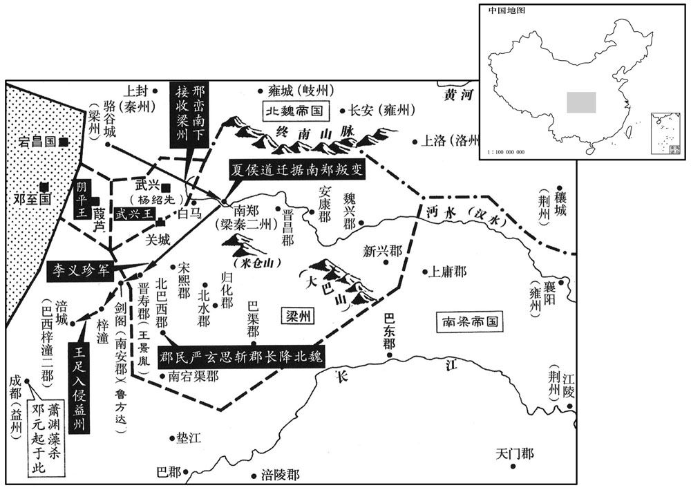
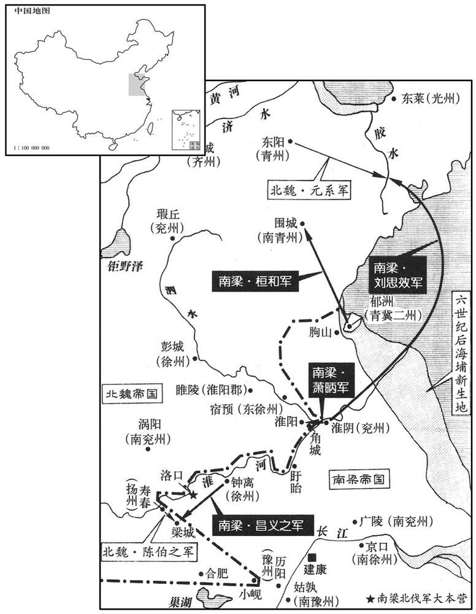
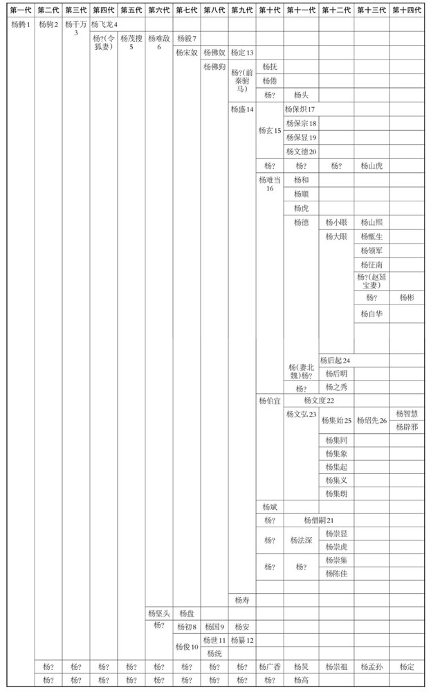
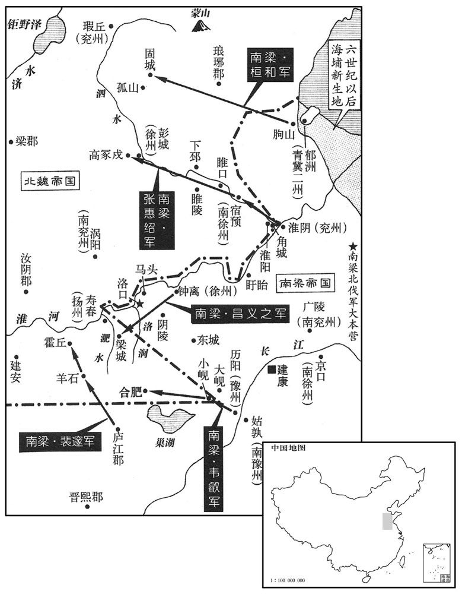
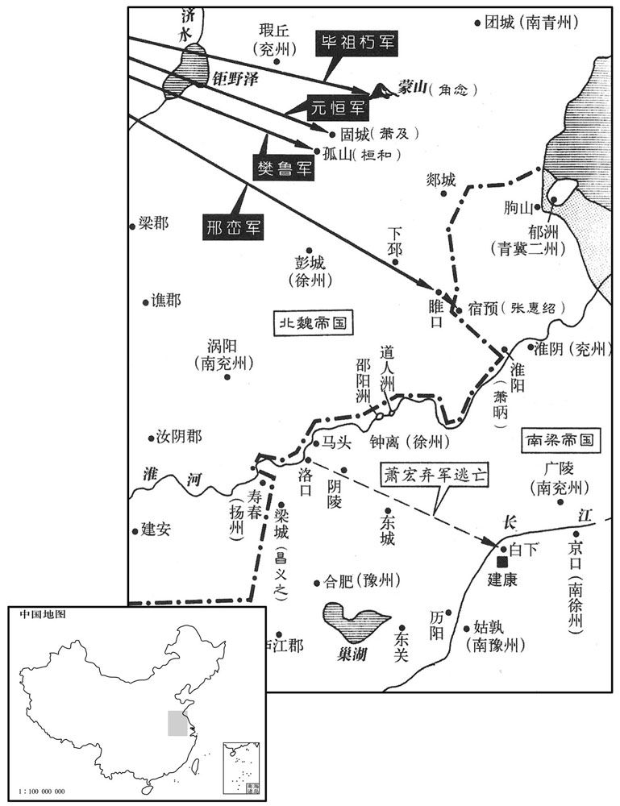
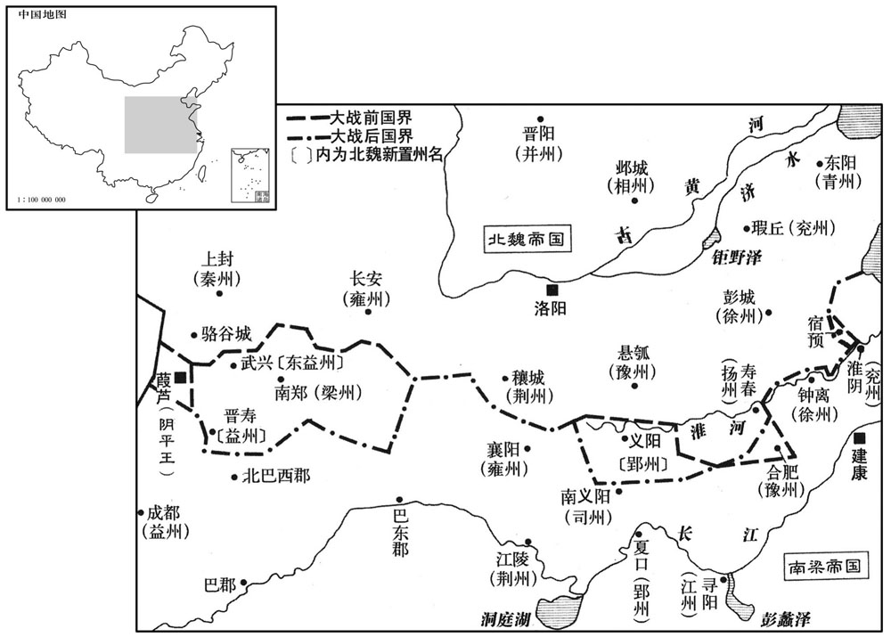

卷次与人物目录 / 卷146
资治通鉴 · 卷第一百四十六【梁纪二】
公元505年至公元507年 · 原文、白话与胡三省注
本页按胡注本编排保存全卷内容。白话采用本站所据译本，未可靠对应的内容另列说明；事件标题用于定位，并非原书文字。
本卷共107段原文，103段有译文对应，4段缺译或待核对。
卷第一百四十六【梁纪二】起旃蒙作噩（乙酉），尽强圉大渊献（丁亥），凡三年。
卷首原文与注释
高祖武皇帝二
公元505年 · 梁高祖武皇帝天监四年
天监四年〔（乙酉、五○五）〕
上传原文的注释括号有异常，字符原样保留；无法可靠划分的段落默认全文显示。
本年事件索引（现代整理）
- 梁武帝设立五经博士、广建学馆招收学生
- 夏侯道迁与江悦等谋划归附北魏
- 夏侯道迁杀梁使叛降魏，杨灵珍等起兵攻南郑
- 梁武帝祭南郊并大赦
- 北魏封高阳王雍为司空、梁弥博为宕昌王
- 梁遣杨公则率宿卫军驻守洛口
- 交州刺史李凯叛乱，被长史李畟平定
- 邢峦进兵汉中屡破梁军，氐人断粮道后又被击败
- 梁任梁弥博为河、凉二州刺史
- 王足攻破梁军，进入剑阁，梁州十四郡尽失
- 萧渊藻因私怨杀邓元起，梁武帝追赠并贬萧渊藻
- 李延寿论邓元起有开土之功却遭冤杀
- 萧渊藻平定益州焦僧护之乱
- 梁朝初立孔子庙
- 梁军围攻北魏小岘戍，遭击败
- 王景胤、鲁方达等屡败于北魏王足
- 北魏中山王元英入侵雍州
- 鲁方达、王景胤等将领接连战败阵亡
- 杨公则击败魏军并斩杀豫州长史石荣
- 沔东太守田青喜叛梁降魏
- 崔光以殿堂生芝为由劝孝文帝修德恤民
- 杨公则与元嵩交战失利
- 梁武帝任临川王宏都督诸军大举伐魏
- 杨集起、杨集义拥立杨绍先为帝并称王
- 邢峦请乘势攻取益州，孝文帝未准
- 王足擅自撤兵致平蜀计划落空，邢峦安抚梁州
- 北魏遣源怀统军讨伐武兴氐人
- 梁司徒谢朏因母丧离职
- 梁年成丰收，米价大跌
春，正月，癸卯朔，诏曰：「二汉登贤，莫非经术，服膺雅道，名立行成。〔行，下孟翻。朱元晦曰：服，着也。膺，胸也。奉持而着之心胸之间。着，则略翻。〕魏、晋浮荡，儒教沦歇，风节罔树，〔树，立也。歇，许竭翻。〕抑此之由。可置五经博士各一人，广开馆宇，招内后进！」于是以贺玚及平原明山宾、吴兴沈峻、建平严植之补博士，各主一馆，馆有数百生，给其饩廪，〔玚，徒杏翻，又音畅。饩，许既翻。郑玄曰：饩，廪稍食也。稍，所教翻。〕其射策通明者即除为吏。〔汉书音义曰：作简策难问，列置案上，在试者意投射取而答之，谓之射策。〕期年之间，怀经负笈者云会。玚，循之玄孙也。〔笈，其劫翻，又楚洽翻，书箱也。晋氏南渡之初，以贺循为儒宗。〕又选学生，往会稽云门山从何胤受业，〔胤时隐云门山，今在会稽南三十一里，有云门寺。会，工外翻。〕命胤选门徒中经明行修者，〔行，下孟翻。〕具以名闻。分遣博士祭酒巡州郡立学。
春季，正月，癸卯朔（初一），武帝发布诏令：“两汉时期的读书人登贤入仕，莫不是通过经术之业，他们都信奉大雅之道，个个饱学，因此能立功名，成大业。魏、晋以来，士人浮华放荡，而儒教衰败，风节得不到树立，当是其根本原因。所以，可以设置《五经》博士各一人，广开馆宇，招纳后进。”于是，将贺及平原人明山宾、吴兴人沈峻、建平人严植之补为博士，让他们各主持一馆，讲学执教，每馆有好几百名学生，由朝廷供给口粮等生活资用，其中在射策考试时应对自如，风解深刻透彻者，即被任为官吏。因此，一年之间，天下士子怀经负笈，云集而至。贺是贺循的玄孙。朝廷又挑选学生，送他们去会稽云门山跟从何胤接受学业，命令何胤选拨门徒中通晓经学、品行优秀者，把他们的姓名上报朝廷。朝廷又分遣博士祭酒巡视各州郡的立学情况。
初，谯国夏侯道迁以辅国将军从裴叔业镇寿阳，为南谯太守，〔按魏收地形志，晋孝武置南谯郡，盖治涡阳。又按萧子显齐志，武帝永明二年，扬州宣城、淮南、南豫、谯、庐江、临江六郡，置南豫州。四年，冠军长史沈宪启二豫分置，以桑堁子亭为断：颍川汝阳在南谯历阳界，悉属西豫，庐江居晋熙汝阴之中，属南豫；求以颍川汝阳属南豫，庐江属西豫。则齐之南谯盖置于历阳西界，而涡阳已入于魏矣。南北建置郡县最为难考者率如此。夏，户雅翻。守，式又翻。〕与叔业有隙，单骑奔魏。魏以道迁为骁骑将军，〔骑，奇寄翻。骁，坚尧翻。〕从王肃镇寿阳，使道迁守合肥。肃卒，〔率，子恤翻；下同。〕道迁弃戍来奔，从梁、秦二州刺史庄丘黑镇南郑，以道迁为长史，领汉中太守。黑卒，诏以都官尚书王珍国为刺史，未至，道迁阴与军主考城江忱之严：「忱」改「悦」。】〕等谋降魏。〔降，户江翻。〕
原先，谯国人夏侯道迁以辅国将军的身份随从裴叔业镇守寿阳，担任南谯太守，因与裴叔业不合，于是就一个人骑马奔投了北魏。北魏任命夏侯道迁为骁骑将军，随从王肃镇守寿阳，王肃指派夏侯道迁驻守合肥。王肃去世，夏侯道迁丢下戍所来投靠南朝，随从梁、秦二州刺史庄丘黑镇守南郑，庄丘黑任命夏侯道迁为长史，兼汉中太守。庄丘黑死后，朝廷诏令都官尚书王珍国为刺史，没有到任，夏侯道迁便私下里与军主考城人江忱之等人密谋投降北魏。
先是，魏仇池镇将杨灵珍叛魏来奔，〔事见一百四十一卷齐明帝建武四年。先，悉荐翻。将，即亮翻。〕朝廷以为征虏将军、假武都王，助戍汉中，有部曲六百人，道迁惮之。上遣左右吴公之等使南郑，道迁遂杀使者，发兵击灵珍父子，斩之，并使者首送于魏。〔使，疏吏翻。〕白马戍主尹天宝闻之，引兵击道迁，败其将庞树，〔败，补迈翻。〕遂围南郑。道迁求救于氐王杨绍先、杨集起、杨集义，皆不应，集义弟集朗引兵救道迁，击天宝，杀之。魏以道迁为平南将军、豫州刺史、岂县侯。〔考异曰：梁帝纪，「天监三年二月，魏陷梁州」，而列传皆无其事。魏帝纪：「正始元年，闰十二月，癸卯朔，萧衍行梁州事，夏侯道迁据汉中来降。」道迁传具言其事。按长历，梁闰二月癸卯，即天监四年正月朔也，故置于此。〕又以尚书邢峦为镇西将军、都督征梁‧汉诸军事，将兵赴之。道迁受平南，辞豫州，〔辞豫州者，欲得梁州也。〕且求公爵，魏主不许。
早先之时，北魏镇守仇池的将领杨灵珍反叛北魏来投奔南齐，南齐朝廷任命他为征虏将军、假武都王，让他协助戍守汉中，手下共有部曲六百人，夏侯道迁很害怕他。梁武帝派遣左右心腹吴公之等人出使南郑，夏侯道迁便杀害了使者，又发兵袭击杨灵珍父子，斩了他们，把他们的首级连同武帝派来的使者的首级一并送到北魏。白马的戍主尹天宝得知这一消息之后，带兵去袭击夏侯道迁，打败了夏侯道迁的将领庞树，于是围困南郑。夏侯道迁向氐王杨绍先、杨集起、杨集义求救，都不予理睬，只有杨集义的弟弟杨集朗带兵去援救夏侯道迁，向尹天宝发起了攻击，杀了他。北魏任命夏侯道迁为平南将军、豫州刺史、丰县侯。又任命尚书邢峦为镇西将军和都督梁、汉诸军事，并让他率兵前去赴任。夏侯道迁接受了平南将军一职，辞掉了豫州刺史之职，并且要求封为公爵，宣武帝不准许。
辛亥，上祀南郊，大赦。
辛亥（初九），梁武帝在南郊祭祀，并诏令大赦天下。
乙丑，魏以骠骑大将军高阳王雍为司空，〔骠，匹妙翻。骑，奇寄翻。〕加尚书令广阳王嘉仪同三司。
二月，丙子，魏以宕昌世子梁弥博为宕昌王。〔宕，徒浪翻。〕
两版字句有差异，建议核对原文。
二月丙子（初五），北魏封容昌世子梁弥博为宕昌王。
上谋伐魏，壬午，遣卫尉卿杨公则将宿卫兵塞洛口。〔自汉以来，卫尉与太常、太仆、廷尉、大鸿胪、宗正、大司农、少府为九卿，而职名未带卿字，至梁分十二寺，始各带卿字。水经注，洛涧北径秦虚，下注淮，谓之洛口。塞，悉则翻。〕
武帝策谋讨伐北魏，壬午（十一日），派遣卫尉卿杨公则率领宿卫兵堵塞了洛口。
壬辰，交州刺史李凯据州反，长史李畟讨平之。〔畟，初力翻。〕
壬辰（二十一日），交州刺史李凯占据了州城反叛朝廷，长史李讨伐并平定了李凯的反叛。
魏邢峦至汉中，击诸城戍，所向摧破。晋寿太守王景胤据石亭，〔水经注：汉水自武兴城北西南流，径关城北，又西径石亭戍，又径晋寿城西。〕峦遣统军李义珍击走之。魏以峦为梁、秦二州刺史。巴西太守庞景民据郡不下，〔庞，皮江翻。〕郡民严玄思聚众自称巴州刺史，附于魏，攻景民，斩之。杨集起、集义闻魏克汉中而惧，闰月，帅群氐叛魏，断汉中粮道，〔帅，读曰率。断，丁舌翻。〕峦屡遣军击破之。
北魏邢峦到达汉中，对各城堡发起了攻击，所向无敌，无坚不摧。晋寿太守王景胤占据着石亭，邢峦派遣统军李义珍打跑了他。北魏任命邢峦为梁、秦二州刺史。巴西太守庞景民占据郡城，拒不投降，郡中之民严玄思聚集群众，自封为巴州刺史，投附于北魏，攻打庞景民并将他斩首。杨集起、杨集义得知北魏攻克汉中的消息之后害怕了，于闰三月，率领氐族部落反叛了北魏，切断了汉中的粮道，邢峦多次派遣军队去袭击、打败了他们。
夏，四月，丁巳，以行宕昌王梁弥博为河‧凉二州刺史、宕昌王。
夏季，四月丁巳（十七日），梁朝任命行宕昌王梁弥博为河、凉二州刺史和宕昌王。
冠军将军孔陵等将兵二万戍深杭，〔冠，古玩翻。将，即亮翻。考异曰：梁邓元起传，「魏将王景胤、孔陵寇东、西晋寿，并遣告急。」按魏邢峦传曰，「萧衍晋寿太守王景胤据石亭」；又曰，「萧衍遣其将军孔陵等据深杭」。然则景胤、陵皆梁将也，元起传误。〕鲁方达戍南安，〔五代志：始州普安县，旧曰南安。始州，唐之剑州。〕任僧褒等戍石同，以拒魏。〔任，音壬。〕邢峦遣统军王足将兵击之，所至皆捷，遂入剑阁。陵等退保梓潼，足又进击，破之。梁州十四郡地，东西七百里，南北千里，皆入于魏。〔萧子显齐志，梁州注籍者二十二郡，荒郡不预焉；今魏取十四郡。〕
梁朝冠军将军孔陵等人率兵两万戍守深杭，鲁方达戍守南安，任僧褒等人戍守石同，以便抵拒北魏。邢峦派遣统军王足带兵去袭击，所到之处无不告捷，于是进入剑阁。孔陵等人只好退保梓潼，王足又进攻，打败了他们。于是，梁州十四郡之地，东西七百里，南北一千里，全部归入北魏版图。
初，益州刺史〔【章：十二行本「史」下有「当阳侯」三字；乙十一行本同；张校同；退斋校同。】〕邓元起以母老乞归，诏征为右卫将军，以西昌侯渊藻代之。渊藻，懿之子也。〔懿死于东昏之手。〕夏侯道迁之叛也，尹天宝驰使报元起。〔使，疏吏翻。〕及魏寇晋寿，王景胤等并遣告急，众劝元起急救之，元起曰：「朝廷万里，军不猝至，若寇贼侵淫，〔侵淫，以痈疽为喻，侵毒好肉为淫肉。〕方须扑讨，董督之任，非我而谁，何事忽忽救之！」〔史言邓元起乞归非由衷之请。扑，普木翻。〕诏假元起都督征讨诸军事，救汉中，而晋寿已陷。萧渊藻将至，元起营还装，粮器械，取之无遗。渊藻入城，恨之；又求其良马，元起曰：「年少郎子，何用马为！」渊藻恚，因醉，杀之。〔元起养寇自资，而卒不免于死，虽渊藻以私忿杀之，亦不为无罪也。少，诗照翻。恚，于避翻。〕元起麾下围城，哭，且问故，渊藻曰：「天子有诏。」众乃散。遂诬以反，上疑焉。元起故吏广汉罗研诣阙讼之，上曰：「果如我所量也。」使让渊藻曰：「元起为汝报雠，〔谓协力诛东昏，报其父雠也。量，音良。为，于伪翻；下同。〕汝为雠报雠，忠孝之道如何！」乃贬渊藻号为冠军将军，〔冠，古玩翻。考异曰：「梁书元起传：「藻以仏储无遗，甚怨望之，因表元起逗留不忧军事，收付州狱，自缢死。」按若止以逗留表元起，安敢擅收前刺史付狱杀之！必诬以反也。今从南史。又梁书，藻本以冠军为益州刺史，与南史异。〕赠元起征西将军，谥曰忠侯。
起初，益州刺史邓元起因母亲年老而乞求归还故里，朝廷下诏征调他为右卫将军，另以西昌侯萧渊藻取代他益州刺史之职。萧渊藻是萧渊懿的儿子。夏侯道迁反叛之时，尹天宝派使者驰告邓元起。等到北魏侵犯晋寿之时，王景胤等人也遣使去向邓元起告急，众人都劝说邓元起急速前去援救，邓元起却说：“朝廷离这里万里之遥，军队不会很快就会来到的，如果入侵的寇贼进一步成势，方才须前去讨伐夷荡，而督帅之任，除了我还有谁呢？所以，何必现在就匆匆忙忙地前去救援呢？”朝廷诏令邓元起代理都督征讨诸军事，让他去援救汉中，但是此时晋寿已经沦陷了。萧渊藻将要抵达，邓元起营造回去时的行装，他把粮资储备和各种器械兵仗搜罗一空，些微不剩。萧渊藻入城之后，见到这一情形，对邓元起怀恨在心。萧渊藻要邓元起的良马，邓元起却对他说：“你一个年少郎君，要马干什么呢？”萧渊藻无比忿怒，借邓元起酒醉之机，杀了他。邓元起的部下把城围住，痛哭主帅，且问主帅被杀之缘故，萧渊藻对他们说：“天子有诏令。”众人才散去了。于是，萧渊藻就诬告邓元起反叛，武帝对此疑而不信。邓元起的故吏广汉人罗研来到朝廷告状，武帝说：“果然同我所思量的一样。”武帝派使者斥责萧渊藻说：“邓元起为你报了父仇，你却为仇人而报仇，杀害了他，忠孝之道在那里呢？”于是贬萧渊藻号为冠军将军，赠邓元起征西将军，谥号为忠侯。
李延寿论曰：元起勤乃胥附，〔毛苌曰：幸下亲上曰胥附。〕功惟辟土，〔谓开梁、益之土也。〕劳之不图，祸机先陷。冠军之贬，于罚已轻，梁之政刑，于斯为失。私戚之端，自斯而启，年之不之，不亦宜乎！
李延寿论曰：邓元起勤勉于事，能体贴下属，能奉事朝廷，开辟疆土，功不可没，功劳没有受到赏赐，却先陷祸遇难。萧渊藻仅仅被贬为冠军将军，所受的惩罚实在是太轻了，梁朝的政治、刑律，在这件事上出现了大的失误，由此而开启了朝廷庇护亲族的弊端，所以不能长久立国，不也是很相宜的吗？
益州民焦僧护聚众作〔【章：十二行本「作」上有「数万」二字；乙十一行本同；孔本同；张校同。】〕乱，萧渊藻年未弱冠，〔人生二十曰弱冠。冠，古玩翻。〕集僚佐议自击之；或陈不可，渊藻大怒，斩于阶恻。乃乘平肩舆巡行贼垒，〔平肩舆，使人就択肩之，故曰平肩。行，下孟翻。〕贼弓乱射，矢下如雨，从者举楯御矢，渊藻命去之。〔射，而亦翻。从，才用翻。去，羌吕翻。〕由是人心大安，击僧护等，皆平之。
益州的百姓焦僧护聚众造反，萧渊藻年纪还不满二十岁，他召集手下的僚佐们商议要亲自去歼击叛民，有人说他不可以亲自去，萧渊藻勃然大怒 ，就把说话的人斩于庭阶的侧旁。于是，萧渊藻乘坐着平肩舆，在叛民的营垒周围巡行，叛民用弓箭乱射，箭雨纷至，随从们举着盾牌为他挡箭，他却命令把盾牌拿开。因此，人心大安，争相出击焦僧护等，都平定了他们。
六月，庚戌，初立孔子庙。
六月庚戌（十一日），梁朝初立孔子庙。
豫州刺史王超宗〔以五代志考之，此时梁置豫州于晋熙，今安庆府怀宁县地。〕将兵围魏小岘。〔岘，户典翻。〕丁卯，魏扬州刺史薛真度遣兼统军李叔仁等击之，超宗兵大败。
豫州刺史王超宗率兵围攻北魏小岘。丁卯（十八日），北魏扬州刺史薛真度派遣兼统军李叔仁等人出击，王超宗的军队一败涂地。
冠军将军王景胤、李畎、辅国将军鲁方达等与魏王足战，屡败，秋，七月，足进逼涪城。〔畎，姑泫翻。涪，音浮。〕
冠军将军王景胤、李畎、辅国将军鲁方达等同北魏的王足交战，屡战屡败，秋季，七月，王足进逼涪城。
八月，壬寅，魏中山王英寇雍州。〔雍，于用翻。〕
八月壬寅（初四），北魏中山王元英入侵雍州。
庚戌，秦、梁二州刺史鲁方达与魏王足统军纪洪雅、卢祖迁战，败，方达等十五将皆死。壬子，王景胤等又与祖迁战，败，景胤等二十四将皆死。
庚戌（十二日），梁朝秦、梁二州刺史鲁方达与北魏王足手下的统军纪洪雅、卢祖迁交战，战败，鲁方达等十五员将领都战死。壬子（十四日），王景胤等人又与卢祖迁交战，也战败，王景胤等二十四位将领全部战死。
杨公则至洛口，与魏豫州长史石荣战，斩之。甲寅，将军姜庆真与魏战于羊石，不利，〔羊石，盖即陈伯之所屯之阳石也。〕公则退屯马头。
杨公则到达洛口，与北魏豫州长史石荣交战，将石荣斩首。甲寅（十六日），将军姜庆真与北魏军队在羊石交战，没有取胜，杨公则只好退驻于马头。
雍州蛮沔东太守田青喜叛降魏。〔考之北史，青喜所据之地盖在襄阳之东，竟陵之西。沔，弥兖翻。〕
担任沔东太守的雍州蛮人田青喜反叛梁朝，投降了北魏。
魏有芝生于太极殿之西序，〔殿庑曰序。〕魏主以示侍中崔光，光上表，以为「此庄子所谓『气蒸成菌』者也。〔菌，巨陨翻，地蕈也。〕柔脆之物，生于墟落秽湿之地，不当生于殿堂高华之处；今忽有之，厥状扶疏，诚足异也。夫野木生朝，野鸟入庙，古人皆以为败亡之象，故太戊、中宗惧灾修德，殷道以昌，〔商王太戊之时，亳有祥桑、谷共生于朝，一暮大拱。太戊惧而修德，祥桑枯死，殷道复兴。高宗祭成汤，有飞雉升鼎耳而雊，祖己曰：「惟先格王正厥事，朝诸侯，有天下，犹运之于掌。」「中宗」当作「高宗」。朝，直遥翻。〕所谓『家利而怪先，国兴而妖豫』者也。〔妖，于遥翻。〕今西南二方，兵革未息，郊甸之内，大旱踰时，民劳物悴，莫此之甚，〔悴，秦醉翻。〕承天育民者所宜矜恤；伏愿陛下侧躬耸意，惟新圣道，节夜饮之乐，养方富之年，则魏祚可以永隆，皇寿等于山岳矣。」于是魏主好宴乐，〔乐，音洛。好，呼到翻。〕故光言及之。
北魏朝廷太极殿内的西墙下生长出了灵芝，北魏宣武帝拿来给侍中崔光看，崔光就此事而上表皇上，认为：“这只是《庄子》一书中所讲的‘气蒸成菌’罢了。这种柔脆的菌类之物，一般生长在废墟角落污秽潮湿的地方，不应当生长在殿堂这样高贵华丽之处；如今忽然生长出来了，而且其形状繁茂，实在是奇怪之事。野木生于朝庭，野鸟飞入宗庙，古人都认为这是败亡的征兆，所以商王太戊、高宗有惧于祥桑、谷共生于朝内以及野鸡飞在鼎上之异兆而修德积善，国运因此而得以复兴昌盛，这正是所谓‘家族吉利而怪异先行，国家兴盛而妖异预见’。如今西方和南方兵戈未息，京郊周围大旱久时，百姓劳崐苦，万物憔悴，已经到了万分严重的地步，而承受上天旨意养育万民的天子在此之际正应该加以体恤，所以恳请陛下关心朝廷内外之事，亲身过问，弘扬圣道，节制夜间饮酒的娱乐，保养正值年轻的身体，如此则北魏的国祚可以永远兴隆，皇寿与山岳等齐。”此时，北魏宣武帝喜好宴饮欢乐，所以崔光在上表中特意提到这点。
九月，己巳，杨公则等与魏扬州刺史元嵩战，公则败绩。
九月己巳（初一），杨公则等人与北魏扬州刺史元嵩交战，杨公则败北。
冬，十月，丙午，上大举伐魏，以扬州刺史临川王宏都督北讨诸军事，尚书右仆射柳惔为副，〔惔，徒甘翻。〕王公以下各上国租及田谷以助军。〔国租者，封国所入之租。田谷者，职田所入之谷。各上，时掌翻。〕宏军于洛口。
冬季，十月丙午（初九），武帝发动军队大举征伐北魏，任命扬州刺史临川王萧宏为都督北讨诸军事，尚书右仆射柳为副，王公以下者各上交封国所收之租和职田所收之谷以便资助军队。萧宏驻军于洛口。
杨集起、集义立杨绍先为帝，自皆称王。十一月，戊辰朔，魏遣光禄大夫杨椿将兵讨之。〔将，即亮翻。〕
杨集起、杨集义拥立杨绍先为帝，自己都称王。十一月戊辰朔（初一），北魏派遣光禄大夫杨椿率兵讨伐杨集起等。
魏王足围涪城，蜀人震恐，益州城戍降魏者什二三，民自上名籍者五万余户。〔上，时掌翻；下西上同。〕邢峦表于魏主，请乘胜进取蜀，以为「建康、成都，相去万里，陆行既绝，〔自襄阳西行遵陆可以至蜀，梁州既入于魏，则陆路断矣。〕惟资水路，水军西上，非周年不达，益州外无军援，一可图也。顷经刘季连反，邓元起攻围，〔事见上卷元年、二年。〕资储空竭，吏民无复固守之志，二可图也。萧渊藻裙屐少年，〔复，扶又翻。裙，渠云翻，下裳也。屐，竭戟翻，蹻也。少，诗沼翻。〕未洽治务，宿昔名将，多见囚戮，〔治，直吏翻。将，即亮翻；下同。〕今之所任，皆左右少年，三可图也。蜀之所恃，唯在剑阁，今既克南安，已夺其险，据彼竟内，〔竟，读曰境。〕三分已一；自南安向涪，方轨无碍，前军累败，后众丧魄，四可图也。〔丧，息浪翻。〕渊藻是萧衍骨肉至亲，必无死理，若克涪城，渊藻安肯城中坐而受困，必将望风逃去；若其出鬬，庸、蜀士卒驽怯，弓矢寡弱，五可图也。〔武王之伐纣也，庸、蜀八国皆从。庸，上庸之地。蜀，蜀郡之地。〕臣内省文吏，不习军旅，赖将士竭力，频有薄捷，既克重阻，〔省，悉景翻。重，直龙翻。重阻，犹言重险也。〕民心怀服，瞻望涪、益，〔时梓潼太守治涪城，益州刺史治成都。〕旦夕可图，正以兵少粮匮，未宜前出，〔少，诗沼翻。〕今若不取，后图便难。况益州殷实，户口十万，比寿春、义阳，其利三倍。〔魏先此已得寿春、义阳，故云然。〕朝廷若欲进取，时不可失；若欲保境宁民，则臣居此无事，乞归侍养。」〔养，余亮翻。〕魏主诏以「平蜀之举，当更听后敕。寇难未夷，何得以养亲为辞！」峦又表称，「昔邓艾、锺会帅十八万众，倾中国资储，仅能平蜀，〔事见七十八卷魏元帝景元四年。难，乃旦翻。帅，读曰率。〕所以然者，鬬实力也。况臣才非古人，何宜以二万之众而希平蜀！所以敢者，正以据得要险，士民慕义，此往则易，〔易，以豉翻；下未易同。〕彼来则难，任力而行，理有可克。今王足已涪城，脱得涪，则益州乃成擒之物，但得之有早晚耳。且梓潼已附民户数万，〔谓已上名藉之民也。〕朝廷岂可不守！又，剑阁天险，得而弃之，良可惜矣。〔诸葛孔明相蜀，以大剑、小剑有隘东之路，故曰剑门。以阁道三十里至险，乃有阁尉。姜维拒锺会于此。晋以其地入梓潼郡。桓温入蜀，于晋寿置剑阁县，属梁州。〕臣诚知战伐危事，未易可为。自军度剑阁以来，鬓发中白，〔中，竹仲翻。〕日夜战惧，何可为心！所以勉强者，〔强，其两翻。〕既得此地而自退不守，恐负陛下之爵禄故也。且臣之意算，正欲先取涪城，以渐而进。若得涪城，则中分益州之地，断水陆之冲，〔魏已得剑阁，进取成都，涪当其冲；梁兵由内水而上救成都，涪亦当其冲。断，丁管翻。〕彼外无援军，孤城自守，何能复持久哉！〔复，扶又翻。〕臣今欲使军军相次，声势连接，先为万全之计，然后图功，得之则大利，不得则自全。又，巴西、南郑，相距千四百里，去州迢遰，〔迢，田聊翻。遰，徒计翻。迢遰，远也。〕恒多扰动。〔恒，户登翻。〕昔在南之日，以其统绾势难，曾立巴州，镇静夷、獠，〔立巴州见一百三十五卷齐高帝建元二年；省巴州见武帝永明二年。獠，鲁皓翻；下同。〕梁州藉利，因而表罢。彼土民望，严、蒲、何、杨，非唯一族，虽率居山谷，而豪右甚多，文学风流，亦为不少，但以去州既远，不获仕进，至于州纲，无由厕迹，〔州之上佐，是谓州纲。少，诗沼翻。〕是以郁怏，多生异图。〔怏，于两翻。〕比道迁建义之始，〔比，毗至翻。〕严玄思自号巴州刺史，克城以来，仍使行事。巴西广袤千里，户余四万，若于彼立州，镇摄华、獠，〔巴西之地，华人与獠杂居，故云华、獠。袤，音茂。〕则大帖民情，〔帖，静也，安也，伏也。〕从垫江已还，不劳征伐，自为国有。」〔李雄、谯纵取蜀，东不能过垫江；以苻秦兵力之盛，取梁、益如反掌，垫江以东，苻秦不能有也。邢峦之图蜀，亦规己垫江以西而已，盖地利足恃也。我朝自绍定失蜀，彭大雅遂城汽为制府，支持四蜀且四十年。渝，古垫江之地也。垫，音迭。〕魏主不从。
北魏王足围攻涪城，蜀人大为震惊、恐惧，益州的城堡有十分之二三投降了北魏，百姓自动报上名籍的有五万多户。邢峦上表北魏宣武帝，请求乘胜而进取蜀地，认为：“建康与成都相离万里之遥，陆路已经阻断，唯一可依靠的就是水路了，但是水军西上，没有一年的时间是到不了的，益州外无援军，这是可以攻取的第一点理由。蜀地前不久经历了刘季连反叛，邓元起攻打围困之事，物资储备空竭，官方和百姓都失去了固守的信心，这是可以攻占的第二点理由。萧渊藻不过是一个衣装华丽而无真才实学的少年，完全不懂治理之道，过去的名将，大多数都被他囚禁杀戮了，现在所任用的，都是他左右的一些少年人，这是可以攻取的第三点理由。蜀地所依恃的只在剑阁，现在既攻克崐了南安，已经夺取了其险要之地，据此天险而向内推进，已占取了境内三分之一的地方；从南安向涪陵，道路宽展，可以双车并行，蜀军前军累战屡败，后头的闻风而丧胆，这是可以攻取的第四点理由。萧渊藻是萧衍的骨肉至亲，必定不愿以死固守，若果攻克涪城，萧渊藻怎肯呆在城中坐而受困，必将望风而逃跑；他如果出战，无奈庸、蜀之地的士卒们才能低下而胆怯，弓箭缺少而无力，这是可以攻取的第五点理由。我本为朝中文官，不熟习军旅之事，但是幸赖将士们尽心竭力，以致频有捷报传来，尽管是那么微小而不足道。现在已经攻克重重险阻，民心归顺，观望涪、益两城，旦夕可得，只是因兵少粮缺，不宜于前去攻打，但现在如不夺取，以后再攻打就难了。况且益州殷富，有十万户人家，与寿春、义阳相比，其利益高出三倍。朝廷如果想要攻取该地，就不应该失去这次机会；如果想要保护境内安宁百姓，则我呆在这里实无事可做，因此乞求归家侍养双亲。”宣武帝给邢峦的诏令中说：“关于平定蜀地之举，你应当等着听取后面的敕令。现在寇难还没有平定，你怎么能以侍养亲人为借口而引退呢？”邢峦又上表说：“过去邓艾、钟会统领十八万大军，倾尽中原的资财储备，才能平定蜀地，之所以如此，是以实力相斗呀。何况我的才能比不上古人，那里可以靠两万兵力而希求平定蜀地呢？之所以敢如此，正因为占据了险要之地，士人和百姓们都倾慕向往大义，我们由此而前进则容易，他们前来抵挡则难，只要我们根据力量而行事，理应攻克。现在王足已经逼近涪城，假如取得了涪陵，则益州就成了待擒之物，只是得到手有早晚之别罢了。何况梓潼已经归附的民户有好几万，朝廷岂可以不加以镇守呢？还有，剑阁天险，如得而放弃，实在是可惜。我诚然知道征战讨伐是危险的事情，不可轻易进行。自从我军越过剑阁以来，我的鬓发已经斑白，日日夜夜为战事情况而焦虑不安，心情紧张得都无法忍受下去了。之所以能勉强坚持着，只是因为考虑到既然已经得到了该地而又自动撤退不加驻守，恐怕有负于陛下所给予的爵位俸禄。而且我心中打算，正想先攻取涪城，然后渐次而进。如果得到涪城，就可以把蜀地分为两伴，阻断水陆交通的要道，他们没有外面来的援军，以孤城而自守，怎么能够持久得了呢？我现在想让各支队伍相次而进，前后连接，互相声援，首先做到万无一失，然后图取大功，如能得到则有大利，不得则可以做到自我保全。另外，巴西与南郑相距一千四百里，离州城遥远，经常发生骚乱。过去属南朝占领之时，由于这里难以统辖管理，曾经设立过巴州，以便镇领夷、獠，而梁州借利，所以上表请求罢撤了该州。这个地方的大户人家有严、蒲、何、杨等姓，不仅仅是一族，他们虽然居住在山谷之中，可是豪强大族很多，文章风流之士也为数不少，但因离州城很远，因此不能获得仕进机会，甚至州里地位较高的佐吏，也无法能跻身其中，因此愤愤不平，多生异图之心。到夏侯道迁建举大义之初，严玄恩自称为巴州刺史，攻

先是，魏主以王足行益州刺史。〔先，悉荐翻。〕上遣天门太守张齐将兵救益州，未至，〔将，即亮翻。〕魏主更以梁州军司泰山羊祉为益州刺史。〔更，工衡翻。〕王足闻之，不悦，辄引兵还，〔还，从宣翻，又如字。〕遂不能定蜀。久之，足自魏来奔。邢峦在梁州，接豪右以礼，抚小民以惠，州人悦之。峦之克巴西也，使军主李仲迁守之。仲迁溺于酒色，费散兵储，公事谘承，无能见者。峦忿之切齿，仲迁惧，谋叛，城人斩其首，以城来降。〔史言魏所以不能定蜀。降，户江翻。〕
早先之时，北魏宣武帝任命王足兼益州刺史。梁武帝派遣天门太守张齐率兵去援救益州，还没有到达，宣武帝又改任梁州军司泰山人羊祉为益州刺史。王足知道这一消息之后，十分不悦，便带兵返回了，于是北魏没有能够平定蜀地。许久之后，王足从北魏来投靠了梁朝。邢峦在梁州之时，对当地的豪强大族以礼相接，对小民百姓抚之以恩惠，因此全州之人都很欢喜。邢峦攻克巴西，让军主李仲迁镇守。李仲迁沉溺于酒色，私自挪用耗散军费，有关公事需要向他请示报告之时，却找不到他的人影。邢峦对此气的咬牙切齿，李仲迁害怕了，密谋反叛，城中的人将李仲迁斩首，献城投降了梁朝。
十二月，庚申，魏遣骠骑大将军源怀讨武兴氐，邢峦等并受节度。〔骠，匹妙翻。骑，奇寄翻。〕
十二月庚申（二十四），北魏派遣骠骑大将军源怀讨伐武兴的氐族部落，邢峦等人一并接受源怀的指挥调遣。
司徒、尚书令谢朏以母忧去职。〔朏，敷尾翻。〕
本段缺少可靠对应白话，原文完整保留；未使用生成译文。
是岁，大穰，〔穰，岂也。诗：岂年穰穰。〕米斛三十钱。
这一年，大丰收，米价每斛三十钱。
译本所载内容待核对（不作白话）
[4]乙丑，魏以骠骑大将军高阳王雍为司空，加尚书令广阳王嘉仪同三司。
[25]司徒、尚书令谢以母忧去职。[25]梁朝司徒、尚书令谢因为母亲守丧而去职。
公元506年 · 梁高祖武皇帝天监五年
五年〔（丙戌、五○六）〕
上传原文的注释括号有异常，字符原样保留；无法可靠划分的段落默认全文显示。
本年事件索引（现代整理）
- 北魏于皇后生子元昌，朝廷大赦
- 梁武帝设立五经博士、广建学校选拔经学人才
- 夏侯道迁因与裴叔业不和弃守寿阳投魏
- 夏侯道迁杀使者并攻杀杨灵珍，北魏封其为豫州刺史
- 梁武帝祭南郊并大赦
- 北魏封梁弥博为宕昌王
- 梁武帝遣杨公则率宿卫军堵截洛口
- 交州刺史李凯叛乱被长史李畟平定
- 邢峦攻克汉中诸城戍并击退氐人
- 梁任梁弥博为河凉二州刺史、宕昌王
- 王足连破梁军攻入剑阁，梁州十四郡归魏
- 萧渊藻杀害邓元起并诬其谋反，梁武帝为邓元起平反
- 李延寿论邓元起开土有功而遭冤杀
- 萧渊藻平定益州焦僧护之乱
- 梁朝初立孔子庙
- 梁军围攻北魏小岘戍失败
- 王景胤、李畎、鲁方达等屡败于魏王足
- 北魏中山王元英入侵雍州
- 梁军在秦州、梁州连战失利，多名将领阵亡
- 杨公则击败魏豫州长史石荣
- 沔东太守田青喜背梁降魏
- 崔光以宫殿生灵芝劝孝文帝修德恤民
- 杨公则与北魏元嵩交战兵败
- 梁武帝发兵大举伐魏，临川王宏屯洛口
- 杨集起、杨集义拥杨绍先为帝并自称王
- 邢峦请魏乘势攻蜀，孝文帝拒绝
- 魏王足撤兵返魏，平蜀计划未成
- 北魏遣源怀征讨武兴氐人
- 梁司徒谢朏因母丧离职
- 梁年成大丰收，米价每斛三十钱
- 北魏于皇后生子元昌，朝廷大赦
- 萧统年仅五岁通诵五经，迁居东宫
- 北魏任邢峦统督东讨诸军
- 北魏源怀去世
- 桓和攻取北魏固城
- 吕苟儿率十余万人围秦州，后向元丽投降
- 杨椿击斩陈瞻，平定秦、泾两州
- 王伯敖与元英战于阴陵，兵败
- 北魏征发六州十万人增援南征，梁军各戍失利
- 北魏任元诠督率后发诸军赴淮南
- 蓝怀恭在睢口战败，北魏攻下宿预
- 临川王萧宏畏战欲退，违背诸将意见停兵洛口
- 张惠绍安抚下邳百姓，使其不因战乱失乡
- 洛口暴风惊营，临川王萧宏逃走，梁军溃散
- 北魏元英乘胜攻取马头城，梁军修治钟离备战
- 元英围攻钟离，邢峦反对魏军继续进攻
- 卢昶、元晖诬陷邢峦掠人，孝文帝不予追究
- 元晖、卢昶贪腐卖官，时人称其饿虎、饥鹰
- 北魏夜袭义阳，俘斩梁军后撤围
- 柔然库者可汗去世，子伏图继位
- 孝文帝整治元愉、元怀王府骄纵属官
- 梁大赦，曹景宗违诏先行后遭暴风受阻
- 邢峦治理梁州善待氐獠百姓
- 北魏议定乐律久未决
春，正月，丁卯朔，魏于后生子昌，大赦。
春季，正月，丁卯朔（初一），北魏于皇后生下儿子元昌，大赦天下。

杨集义围魏关城，〔此即阳平关城也。〕邢峦遣建武将军傅竖讨之，〔竖，而庾翻。〕集义逆战，竖眼击破之；乘胜逐北，壬申，克武兴，执杨绍先，送洛阳。杨集起、杨集义亡走，遂灭其国，〔晋惠帝元康六年，氐王杨茂搜始据仇池百顷，其后浸盛，尽有汉武都郡之地，北侵陇西、天水，南侵汉中。拓跋既盛，取武都、仇池之地，杨氏仅据武兴。今魏既取汉中，遂灭杨氏。〕以为武兴镇，又改为东益州。〔东益州领武兴、仇池、盘头、广长、梓潼、洛丛郡。〕
杨集义围攻北魏关城，邢峦派遗建武将军傅竖眼去讨伐，杨集义迎战，傅竖眼击败了杨集义，并乘胜追逐败军，壬申（初六），攻克了武兴，抓获了杨绍先，押送往洛阳。杨集起、杨集义逃跑了，于是灭掉了他们所建之国，改为武兴镇，其后又改为东益州。
乙亥，以前司徒谢朏为中书监、司徒。〔朏，敷尾翻。〕
两版字句有差异，建议核对原文。
乙亥（初九），梁朝任命前司徒谢为中书监、司徒。
冀州刺史桓和击魏南青州，不克。〔梁青、冀二州治郁洲。魏显祖取三齐，置东徐州于圂城，领东安、东莞郡。高祖太和二十二年，改为南青州。五代志：沂州沂水县，旧置南青州。〕
梁朝冀州刺史桓和攻打北魏的南青州，没有攻克。
魏秦州屠各王法智聚众二千，〔屠，直于翻。〕推秦州主簿吕苟儿为主，改元建明，置百官，攻逼州郡。泾州民陈瞻亦聚称王，改元圣明。〔魏置泾州，治临泾城，领安定、陇东、新平、赵平、平凉、平原等郡。〕
北魏秦州匈奴屠各部落的王法智聚集两千人，推举秦州主簿吕苟儿为首领，改年号为“建明”，设置了百官，攻逼州郡。泾州的百姓陈瞻也聚众称王，改年号为“圣明”。
己卯，杨集起兄弟相帅降建〔魏〕。〔帅，读曰率。降，户江翻。〕
己卯（十三日），杨集起兄弟一起投降了北魏。
甲申，封皇子纲为晋安王。
甲申（十八日），梁朝封皇子萧纲为晋安王。
二月，丙辰，魏主诏王公以下直言忠谏。治书侍御史阳固上表，〔治，直之翻。上，时掌翻。〕以为「当今之务，宜亲宗室，勤庶政，贵农桑，贱工贾，〔贾，音古。〕绝谈虚穷微之论，简桑门无用之费，以救饥寒之苦。」时魏主委任高肇，疏薄宗室，好桑门之法，〔好，呼到翻。〕不亲政事，故固言及之。
二月丙辰（二十一日），北魏宣武帝诏令王公以下的官员对自己直言忠谏。诏书侍御史阳固上表，认为：“圣上当今所应做的是要亲近宗室，勤于庶政，鼓励农桑，抑制工商，杜绝一切不切合实际的谈论玄虚之理，压缩佛门无用的费用，用以救济饥寒之苦。”当时宣武帝把政事委任于高肇，疏远皇室宗亲，热衷于佛法，不亲自过问朝廷政事，所以阳固才有上述之言。
戊午，魏遣右卫将军元丽都督诸军讨吕苟儿。丽，小新成之子也。〔小新成见一百二十九卷宋孝武大明五年。〕
戊午（二十三日），北魏派遣右卫将军元丽督率各路军队讨伐吕苟儿。元丽是小新成的儿子。
乙丑，徐州刺史历阳昌义之与魏平南将陈伯之战于梁城，〔晋孝武太元中，侨立梁郡于淮南寿春界，故有梁城，其地在寿阳东北，锺离西南。〕义之败绩。
乙丑，（三十日），梁朝徐州刺史历阳人昌义之同北魏平南将军陈伯之在梁城交战，昌义之战败。
将军萧昺将兵击魏徐州，围淮阳。〔角城在淮水之阳，淮阳又在角城北十八里，治宿预。梁后于角城置淮阳郡。昺，音丙。〕
梁朝将军萧率兵攻打北魏徐州，围攻淮阳。
三月，丙寅朔，日有食之。
三月，丙寅朔（初一），发生日食。
己卯，魏荆州刺史赵怡、平南将军奚康生救淮阳。＊
己卯（十四日），北魏荆州刺史赵怡、平南将军奚康生前去援救淮阳。
魏咸阳王禧之子翼，遇赦求葬其父，〔禧诛见一百四十四卷齐和帝中兴元年。〕屡泣请于魏主，魏主不许。癸未，翼与其弟昌、晔来奔。上以翼为咸阳王，翼以晔嫡母李妃之子也，请以爵让之，上不许。
北魏咸阳王元禧的儿子元翼，遇赦后请求安葬父亲，数次在宣武帝面前哭着请求，宣武帝没有准许。癸未（十八日），元翼同其弟弟元昌、元晔前崐来奔投梁朝。武帝封元翼为咸阳王，元翼因为元晔是正室母亲李妃所生，所以请求把爵位让给元晔，但是武帝没有准许。
辅国将军刘思效败魏青州刺史元系于胶水。〔魏收志，光州长广郡即墨县有胶水。水经，胶水出黔陬县胶山，北流过夷安县东，又东北过胶东县城北百里注于海。败，补迈翻。〕
梁朝的辅国将军刘思效在胶水击败了北魏青州刺史元系。

临川王宏使记室吴兴丘迟为书遗陈伯之曰：〔遗，于季翻。〕「寻君去就之际，非有他故，直以不能内审诸己，受流言，沈迷猖蹶，以至于此。〔沈，持林翻。〕主上屈法申恩，吞舟是漏，〔汉惩秦法之苛，禁罔疏阔，时称为漏吞舟之鱼。〕将军松柏不翦，亲戚安居，高台未倾，爱妾尚在。〔松柏不翦，谓不毁夷其先世坟墓也。亲戚安居，谓其亲戚在江南者皆不以叛党连坐，安居自若也。高台未倾，谓居第未尝污潴，池台如故也。爱妾尚在，谓其婢妾犹守其家，不没于官及流落于他家也。昔雍门子见孟尝君，吟曰：「高台既已倾，曲池既已平，坟墓生荆棘，牧竖游其上，孟尝君亦如是乎﹖」孟尝加为之喟然叹息。〕而将军鱼游于沸鼎之中，燕巢于飞幕之上，〔鱼游釜中，古人多有是言，言将必至于焦烂。左传，吴季札谓孙林父曰：「夫子之居此也，犹燕之巢于幕上。」杜预注曰：言至危也。〕不亦惑乎！想早励良图，自求多福。」庚寅，伯之自寿阳梁城拥众八千来降，〔伯之元年奔魏，今复还。降，下江翻。〕魏人杀其子虎牙。诏复以伯之为西豫州刺史；未之任，复以为通直散骑常侍。〔不使之出当边镇，恐其复叛也。复，扶又翻。〕久之，卒于家。
临川王萧宏让记室吴兴人丘迟写信送给陈伯之，信中说道：“思量您投降北魏之时，没有别的原因，只是因为内心不能自审，外受流言的影响，迷乱而猖狂，以至于到了这样的地步。当今皇上不惜不按法律以申恩德，即使再大的罪过也能宽宥，所以将军您的祖坟没有被毁，松柏茂盛；您留在江南的亲戚都没有以叛党连坐，而安居自苦；您的宅第没有受损，池台如故；您的爱妾还守在家中，没有被官家收去或流落于其他人家。可是，将军您却如鱼游于沸鼎之中，如燕筑巢于飞动的幕布之上，至今身在敌营，这不是非常糊涂的事吗？希望您能早日替自己谋一条好的出路，以便获得日后的幸福。”庚寅（二十五日），陈伯之从寿阳梁城率领八千人马来投降梁朝，北魏人杀了他的儿子陈虎牙。武帝诏令仍以陈伯之为西豫州刺史，陈伯之还没有到任，又任命他为通直散骑常侍。后来，陈伯之在家中去世。
初，魏御史中尉甄琛〔甄，七人翻。琛，丑林翻。〕表称：「山林川泽有虞、衡之官，为之厉禁，盖取之以时，不仗戕贼而已，故虽置有司，实为民守之也。〔周礼：山虞掌山林之政令，物为之厉而为之守禁。令万民时斩材，有期日，凡窃木者有刑罚。林衡掌林麓之禁令而平其守，以时计林麓而赏罚之。川衡掌巡川泽之禁令而平其守，以时舍其守，犯禁者执而诛罚之。泽虞掌国泽之政令，为之厉禁，使其地之人守其财物，以时入于王府，颁其余于万民。为，于伪翻；下专为同。〕夫一家之长，必惠养子孙，〔长，知两翻。〕天下之君，必惠养兆民，未有为人父母而吝其酰醢，富有群生而榷其一者也。〔榷，古岳翻。〕今县官鄣护河东盐池而收其利，是专奉口腹而不及四体也。盖天子富有四海，何患于贫！乞弛盐禁，与民共之！」录尚书事勰、尚书邢峦奏，〔勰，彭城王勰也，音协。〕以为「琛之所陈，坐谈则理高，行之则事阙。窃惟古之善治民者，必污隆随时，丰俭称事，〔治，直之翻。称，尺证翻。〕役养消息以成其性命。若任其自生，随其饮啄，乃是刍狗万物，〔老子曰：天地不仁，以万物为刍狗。注云：天施地化，不以仁恩。天地生万物，视之如刍草狗畜，任自然也。〕何以君为！是故圣人敛山泽之货以宽田畴之赋，收关市之税以助什一之储，〔此谓田畴什一之赋不足以供国用，故敛山泽、税关市以助之也。〕取此与彼，皆非为身，〔为，于伪翻；下同。〕所谓资天地之产，惠天地之民也。今盐池之禁，为日已久，积而散之，以济军国，非专为供太官之膳羞，给后官之服玩。既利不在己，则彼我一也。然自禁盐以来，有司多慢，出纳之间，或不如法。是使细民嗟怨，负贩轻议，此乃用之者无方，非作之者有失也。一旦罢之，恐乖本旨。一行一改，法若弈棋，〔左传曰：弈者举棋不定，不胜其耦。今此以喻一行一改无定法也。〕参论理要，宜如旧式。」〔自此以上，合载于一百四十三卷齐东昏永明二年。〕魏主卒从琛议，〔琛议既行于景明初年，随格于景明四年，今复罢盐禁，是卒从其议也。卒，子恤翻。〕夏，四月，乙未，罢盐池禁。〔复收盐利见上卷二年。〕
起初，北魏御史中尉甄琛上表讲道：“《周礼》中制定了专管山林川泽的山虞、林衡、川衡、泽虞之官，制定了关于山林川泽的严厉禁令，这是使百姓在规定的时令内获取利益，而不让随意乱砍滥取，所以虽然设置了这样的官员，实际上却是百姓自己守护。一家之长，必须抚养他的子孙，天下之君，必须惠养万民，没有做父母吝啬醋酱、富有天下万物而专占一物的。如今朝廷独霸河东的盐池而坐收其利，这是专奉口腹而不及四体。天子富有四海，何患于贫！所以，乞请放松盐禁，与民共享其利。”录尚书事元勰和尚书邢峦也上奏，认为：“甄琛所讲的，坐着谈论则高明合理，而实际执行则行不通。我们认为古来善于统治百姓的，必定升降依时，丰俭随事，役使养育互为消长以成全他们性命。如果任其自生自长，随其饮水啄食，那是把百姓当作刍草狗畜，还要君主做什么呢？所以，圣人获取山泽之货，收取关市之税，来补助田亩什一之赋之不足，以供国用，此处取来用到彼处，都不是为了自己，正所谓利用天地的出产，施惠于天下之民。如今禁止私人采盐，已经实行了很长时间了，集中其财富而使用，是为了维持国家和军队的开支，并不是专门为了供给皇宫的饮食，以及后宫的服饰玩物。既然不是为了皇上一人享乐，那么让老百姓获利同让国家获利都是一样的。然而，自从禁盐以来，官员们多有不经心的，收支出纳中间，或者有不按照法令执行的行为。因此，使老百姓抱怨在心，商贩们非议在口，这只不过是管理者无方，并非是制定禁令的人有过失。一旦撤销盐池禁令，恐怕有违于本初之意。一行一改，没有定法，正如奕棋者那样举棋不定，所以按理而论，应该维持过去的样子而不变。”宣武帝最终采纳了甄琛崐的建议，夏季，四月乙未（初一），撤销了盐池禁令。
庚戌，魏以中山王英为征南将军、都督扬‧徐二州诸军事，帅众十余万以拒梁军，〔帅，读曰率。〕指授诸节度，所至以便宜从事。
庚戌（十六日），北魏任命中山王元英为征南将军，都督扬、徐二州诸军事，统率十多万大军抵抗梁朝军队，指挥各路军队，所到之处随机而行事。
江州刺史王茂将兵数万侵魏荆州，诱魏边民及诸蛮更立宛州，〔将，即亮翻。诱，音酉。更魏荆州为宛州也。更，工衡翻。宛，于元翻。〕遣其所署宛州刺史雷豹狼等袭取魏河南城。〔萧子显齐志，雍州有河南郡，所领五县，惟棘阳为实土。则河南郡当在南阳棘阳县界。五代志，邓州新野县日旧曰棘阳。〕魏遣平南将军杨大眼都督诸军击茂，辛酉，茂战败，失亡二千余人。〔考异曰：大眼传云：「俘馘七千有余」，今从魏帝纪。〕大眼进攻河南城，茂逃还；大眼追至汉水，攻拔五城。
梁朝江州刺史王茂率兵数万入侵北魏荆州，诱使北魏边境上的民众以及各蛮族部落另立宛州，并派遣自己所任命的宛州刺史雷豹狼等去袭取北魏河南城。北魏派遣平南将军杨大眼督率各路军马抗击王茂，辛酉（二十七日），王茂战败，失散伤亡两千多人。杨大眼进而攻打河南城，王茂逃返，杨大眼追至汉水，攻占了五城。
魏征虏将军宇文福寇司州，俘千余口而去。
北魏征虏将军宇文福侵犯梁朝司州，掠夺了一千多人口而离去。
五月，辛未，太子右卫率张惠绍等侵魏徐州，拔宿预，执城主马成龙。〔晋安帝立宿预县，属淮阳郡，魏高祖以为南徐州治所。〕乙亥，北徐州刺史昌义之拔梁城。〔南徐治京口，故以锺离为北徐。〕
五月辛未（初二），梁朝太子右卫率张惠绍等人入侵北魏徐州，攻占宿预，抓住了城主马成龙。乙亥（初六），北徐州刺史昌义之攻占了梁城。

豫州刺史韦叡遣长史王超等攻小岘，未拔。叡行围栅，〔行，下孟翻。〕魏出数百人陈于门外，〔陈，读曰阵。〕叡欲击之，诸将皆曰：〔将，即亮翻；下同。〕「向者轻来，未有战备，徐还授甲，乃可进耳。」叡曰：「不然。魏城中二千余人，足以固守，今无故出人于外，必其骁勇者也，〔骁，坚尧翻。〕苟能挫之，其城自拔。」众犹迟疑，叡指其节曰：「朝廷授此，非以为饰，韦叡法不可犯也！」遂进击之，士皆殊死战，魏兵败走，因急攻之，中宿而拔，〔中，读曰仲，又竹仲翻。考异曰：魏帝纪，「六月，辛丑，陷小岘戍。」今从叡传。〕遂至合肥。
豫州刺史韦睿派遣长史王超等去攻打小岘，没有攻下来。韦睿将要围栅栏，北魏派出数百人排阵在城门外，韦睿想要攻击他们，诸位将领们都说：“前次轻装而来，没有很好地备战，应该慢慢回去给士兵发授甲衣，方才可以进击。”韦睿回答：“不对。北魏城中有两千多人，足以固守，现在无缘无故而把人马安排在外面，这些人一定是特别骁勇善战者，如果能挫败他们，这座成就自然能攻下来。”众人还迟疑不定，韦睿指着旄节说道：“朝廷给了我这东西，不是用来做装饰的，我韦睿的军法是不容违反的。”于是开始向北魏的军队发起攻击，兵士们都殊死作战，北魏的兵士败逃，因此便对小岘发起了猛烈攻击，次日夜间攻下了小岘，于是到达了合肥。
先是，右军司马胡景略等攻合肥，久未下，〔先，悉荐翻。〕叡按山川，夜，帅众堰肥水，顷之，堰成水通，舟舰继至。〔帅，读曰率。舰，户黯翻。〕魏筑东、西小城夹合肥，叡先攻二城，魏将杨灵胤帅众五万奄至。众惧不敌，请奏益兵，叡笑曰：「贼至城下，方求益兵，将何所及！且吾求益兵，彼亦益兵，兵贵用奇，岂在众也！」遂击灵胤，破之。叡使军主王怀静筑城于岸以守堰，魏攻拔之，城中千余人皆没。魏人乘胜至堤下，兵势甚盛，诸将欲退还漅湖，或欲保三叉，〔考异曰：南史作「三丈」。今从梁书。盖漅湖之水于此分三汊，故名。退保于此，利于入船，故众欲之。〕叡怒曰：「宁有此邪！」命取伞扇麾幢，树之堤下，示无动志。〔伞，苏旱翻，又苏旰翻。幢，传江翻。〕魏人来凿堤，叡亲与之争，魏兵却，因筑垒于堤以自固。叡起鬬舰，高与合肥城等，四面临之，城中人皆哭。守将杜元伦登城督战，中弩死，〔将，即亮翻。中，竹仲翻。〕辛巳，城溃，俘斩万余级，获牛羊以万数。
原先，右军司马胡景略等攻打合肥，久攻不下，韦睿巡视了山川地理形势，夜间，率领众人修堰阻拦肥水，很快，堰坝筑成水路连通，舟船相继而至。北魏修筑了东、西小城以便夹护合肥，韦睿先攻打下这两座小城，北魏将领杨灵胤率领五万军队忽然而至。众人害怕不能抵挡得住，请求上奏朝廷派兵增援，韦睿笑道说：“贼寇来到了城下，方才请求增兵，那里还能来得及呢？况且我请求增兵，对方也增兵，用兵之法贵在出奇制胜，岂在人数众多呢？”于是出击杨灵胤，打败了他。韦睿派军主王怀静在岸边修筑城堡来守护堰坝，北魏攻占了城堡，城中一千多人全部淹死。北魏军队乘胜来到堤下，兵势特别凶猛，韦睿手下的诸位将领想要退回到巢湖去，有人提出想回保三叉，韦睿怒不可遏，说：“那里有这样的道理呢！”他命令人取来自己的伞扇麾幢，树立在堤下，以表示毫无退撤之意。北魏人来凿堤，韦睿亲自与其搏斗，北魏兵退撤了崐，于是韦睿又在堤上修筑了城垒，以便固守。韦睿起造战舰，其高低与合肥城相等，从四面逼近合肥城，城里的人都怕的哭了，守将杜元伦登城督战，被弩机射中而身亡。辛已（十二日），合肥城溃破，俘虏和斩杀了一万多人，抓获的牛羊以万计数。
叡体素羸，未尝跨马，〔羸，伦为翻。〕每战，常乘板舆督厉将士，勇气无敌；昼接宾旅，夜半起，算军书，张灯达曙。抚循其众，常如不及，故投募之士争归之。所至顿舍馆宇，藩墙皆应准绳。
韦睿的体质向来赢弱，从来没有骑过马，每次战斗，都乘坐在板舆上监督激励将士们，勇气十足，所向无敌；他白天接待宾客来访者，夜半起来，谋算军书，直到清晨，没有倦意。他对部下爱护备至，常恐不及，所以投奔他的人士争相前来。他所到达之处住的地方，房屋围墙，都合乎规定。
诸军进至东陵，〔水经注，庐江金兰县西北东陵乡大苏山，灌水之所出也。考之诸志无金兰县，未知何世所置。〕有诏班师，〔班师之诏，必在洛口师溃之后，史因书叡事而终言之。〕去魏城既近，〔据姚思廉梁书，时魏守甓城，去东陵二十里。〕诸将恐其追蹑，叡悉遣辎重居前，身乘小舆殿后，〔重，直用翻。殿，丁练翻。〕魏人服叡威名，望之不敢逼，全军而还。于是迁豫州治合肥。〔豫州自晋熙迁合肥。〕
各路军马抵达东陵，有诏令传来让班师而返，众将领们担心北魏军队随后追击，韦睿安排全部辎重在前而行，自己乘坐小车殿后，北魏军队摄服于韦睿的威名，眼望着却不敢逼近，梁朝军队全部安然而返。于是，梁朝把豫州治所迁到合肥。
壬午，魏遣尚元遥南拒梁兵。
壬午（十三日），北魏派遣尚书元遥南下抵抗梁朝军队。
癸未，魏遣征西将军于劲节度秦、陇诸军。
癸未（十四日），北魏派遣征西将军于劲指挥秦、陇之地的军队。
丁亥，庐江太守闻喜裴邃克魏羊石城，庚寅，又克霍丘城。〔水经注：曹魏安丰都尉治安丰津南，后以其故城立霍丘戍，隋立霍丘县，今寿春东百余里。杜佑曰：霍丘，汉松滋县地。考异曰：梁裴邃传云：「五年，征邵阳洲，魏人为长桥以济。邃筑垒逼桥，密作没突舰，会淮水暴涨，邃乘舰径造桥侧，魏众惊溃，溛乘胜追击，大破之，进克羊石、霍丘城，平小岘，攻合肥。」魏帝纪：「辛巳，衍将陷合肥，己丑，又陷羊石、霍丘。」按韦叡传，叡攻邵阳洲，方使邃乘舰焚桥，事在克合肥后。又梁帝纪，辛巳，叡克合肥，丁亥，邃克羊石，庚寅，克霍丘，今从之。邃传载取二城在破邵阳洲后，误也。〕
丁亥（十八日），庐江太守闻喜人裴邃攻克了北魏的羊石城，庚寅（二十一日），又攻克了霍丘城。
六月，庚子，青、冀二州刺史恒和克朐山城。〔朐，音劬。〕
六月，庚子（初七），青、冀二州刺史桓和攻克了朐山城。
乙巳，魏安西将军元丽击王法智，破之，斩首六千级。
乙巳（十二日），北魏安西将军元丽进攻王法智，打败了他，斩首六千多。
张惠绍与假徐州刺史宋黑水陆俱进，趣彭城，围高冢戍，〔水经注：彭城同孝山阴有楚元王耱，高十许丈，广百许步。意者魏立戍于此乎！趣，七喻翻。〕魏武卫将军奚康生将兵救之，〔将，即亮翻。〕丁未，惠绍兵不利，黑战死。
张惠绍与代理徐州刺史的宋黑水陆并进，直抵彭城，围攻高冢戍，北魏武卫将军奚康生率兵前去援救，丁未（十四日），张惠绍出兵失利，宋黑战死。
太子统生五岁，能遍诵五经；庚戌，始自禁中出居东宫。
太子萧统年方五岁，就能完整地诵读《五经》。庚戌（十七日），萧统始从皇宫中搬出入住东宫。
丁巳，魏以度支尚书邢峦都督东讨诸军事。〔度，徒洛翻。〕
丁巳（二十四日），北魏委派度支尚书邢峦都督东讨诸军事。
魏骠骑大将军冯翊惠公源怀卒。怀性宽简，不喜烦碎，〔骠，匹妙翻。骑，奇寄翻。喜，许记翻。〕常曰：「为贵人当举纲维，何必事事详细！譬如为屋，但外望高显，楹栋平正，基壁完牢，足矣；斧斤不平，斲削不密，非屋之病也。」
北魏骠骑大将军冯翊惠公源怀去世。源怀性格宽容直率，不喜欢烦琐之事，常常说：“做贵人应当举纲执要，何必事事俱到呢？譬如建房屋，只要从外面望去高大突出，梁柱平正，地基和墙壁完好坚固，就足够了。刀斧不平，砍削不细，并非是房屋的毛病。”
秋，七月，丙寅，桓和击魏兖州，拔固城。〔固城，疑即抱犊固城也。抱犊固在兰陵界。〕
秋季，七月丙寅（初三），桓和攻打北魏兖州，攻占了固城。
吕苟儿率众十余万屯孤山，围逼秦州，〔此孤山当在上邽左右，魏秦州治上邽，领天水、略阳、汉阳郡。元丽进击，大破之。行秦州事李韶掩击孤山，获其父母妻子，庚辰，苟儿帅其徒诣丽降。〔帅，读曰率。降，户江翻。〕
本段缺少可靠对应白话，原文完整保留；未使用生成译文。
兼太仆卿杨椿别讨陈瞻，瞻据险拒守。诸将或请伏兵山蹊，断其出入，〔断，丁管翻。〕待粮尽而攻之，或欲斩木焚山，然后进吋，椿曰：「皆非计也。自官军之至，所向辄克，贼所以深窜，正避死耳。今约勒诸军，勿更侵掠，贼必谓我见险不前；待其无备，然后奋击，可一举平也。」乃止屯不进。贼果出抄掠，椿复以马畜饵之，〔抄，楚交翻。复，扶又翻。〕不加讨逐。久之，阴简精卒，衔枚夜袭之，斩瞻，传首。秦、泾二州皆平。
北魏兼太仆卿杨椿另外去讨伐陈瞻，陈瞻据险抗守。将领中有人请求在山涧中埋藏伏兵，阻断陈瞻的出入之道，等待他粮食耗尽之后再攻打，有人主张伐木烧山，然后再攻打，杨椿说：“这都不是良策。自从官军出发以来，所到之处，无不攻克，贼寇们之所以窜入深山之中，正是为了逃避死亡。现在命令各路军队暂时按兵不动，不要进攻，贼寇们一定认为我们见险不前；我们乘其不备之时，奋力攻击，就可以一举平定他们。”于是，让部队驻扎下来，不再前进了。贼寇们果然出来抢掠，杨椿又以马匹作为诱饵，不加以追击。许久，杨椿悄悄地挑选精悍兵卒，让他们口中衔着木棒以免弄出声响，乘夜偷袭陈瞻，斩了陈瞻，传送首级到洛阳。于是，秦、泾两州都平定了。
戊子，徐州刺史王伯敖与魏中山王英战于阴陵，〔阴陵县，汉属九江郡，晋属淮南郡。梁北谯郡治阴陵城，隋改北谯郡为全椒县，属江都郡。唐全椒县属滁州。〕伯敖兵败，失亡五千余人。
戊子（二十五日），徐州刺史王伯敖与北魏中山王元英在阴陵交战，王伯敖兵败，失散伤亡五千多人。
己丑，魏发定、冀、瀛、相、并、肆六州十万人以益南行之兵。〔相，息亮翻。〕上遣将军角念将兵一万屯蒙山，招纳兖州之民，降者甚众。〔魏收志，南青州东安郡新泰县东南有蒙山。盖蒙山即古所谓东蒙也，与固城、孤山皆近魏兖州东界，故梁连兵据之，以招兖州之民，北史邢峦传，谓是时梁人侵轶徐、兖，是矣。角，姓也。姓苑，汉有角善叔。将，即亮翻。降，户江翻。〕是时，将军萧及屯固城，桓和屯孤山。〔魏收志，兰陵郡兰陵县有石孤山，又昌虑县有孤山。〕魏邢峦遣统军樊鲁攻和，别将元恒攻及，〔恒，户登翻。〕统军毕祖朽攻念。壬寅，鲁大破和于孤山，恒拔固城，祖朽击念，走之。
己丑（二十六日），北魏征发定、冀、瀛、相、并、肆六州十万人以增加南进之兵。梁武帝派遣将军角念率兵一万驻扎蒙山，招纳兖州的百姓，前来投降的人很多。这时，将军萧及驻守在固城，桓和驻守在孤山。北魏邢峦派遣统军樊鲁攻打桓和，别将元恒攻打萧及，统军毕祖朽攻打角念。壬寅（疑误），樊鲁大败桓和于孤山，元恒攻下了固城，毕祖朽进攻角念，赶跑了他。
己酉，魏诏平南将军安乐王诠督后发诸军赴淮南。诠，长乐之子也。〔安乐王长乐见一百三十三卷宋苍梧王元徽三年。乐，音洛。诠，且缘翻。〕
己酉（疑误），北魏诏令平南将军安乐王元诠督率后出发的各路军队赶赴淮南。元诠是元长乐的儿子。
将军监怀恭与魏邢峦战于睢口，〔姓谱，蓝，鲁甘翻，姓也。战国策有中山大夫蓝诸。水经注：睢水过睢陵县故城北而东南流，径下相县故城南，又东南流，入于泗，谓之睢口。睢，音虽。〕怀恭败绩，峦进围宿预。怀恭复于清南筑城，〔清南，清水之南也。复，扶又翻。〕峦与平南将军杨大眼合攻之，九月，癸酉，拔之，斩怀恭，杀获万计。张惠绍弃宿预，〔此与后张惠绍闻洛口败，引兵退，本一事耳。解见后。〕萧昺弃淮阳，遁还。
将军蓝怀恭与北魏邢峦在睢口交战，蓝怀恭战败，邢峦进而围攻宿预。蓝怀恭又在清水之南修筑城堡，邢峦与平南将军杨大眼合攻蓝怀恭，九月癸酉（十一日），攻克城堡，斩了蓝怀恭，斩杀俘获梁军以万计数。张惠绍放弃了宿预，萧放弃了淮阳，逃跑了回来。
临川王宏以帝弟将兵，〔将，即亮翻；下同。〕器械精新，军容甚盛，北人以为百数十年所未之有。军次洛口，〔水经注：洛涧在西曲阳县北，刘牢之斩秦将梁成处，北历秦墟，下注淮，谓之洛口。〕前军克梁城，即谓昌义之克梁城也。〕诸将欲乘胜深入，宏性懦怯，部分乖方。〔分，扶问翻。〕魏诏邢峦引兵渡淮，与中山王英合敢梁城，宏闻之，惧，召诸将议旋师，吕僧珍曰：「知难而退，不亦善乎！」宏曰：「我亦以为然。」柳惔曰：「自我大众所临，何城不服，何谓难乎！」裴邃曰：「是行也，固敌是求，何难之避！」马仙琕曰：「王安得亡国之言！天子扫境内以属王，〔惔，徒甘翻。琕，部田翻。属，之欲翻。〕有前死一尺，无却生一寸！」昌义之怒，须发尽磔，〔磔，陡格翻，张开也。〕曰：「吕僧珍可斩也！岂有百万之师出未逢敌，望风遽退，何面目得见圣主乎！」朱僧勇、胡辛生拔剑而退，〔「退」，据南史宏传当作「起」。〕曰：「欲退自退，下官当前向取死。」议者罢出，僧珍谢诸将曰：「殿下昨来风动，〔谓宏心风发动也。〕意不在军，深恐大致沮丧，故欲全师而返耳。」〔沮，在吕翻。丧，息浪翻。〕宏不敢遽违群议，停军不前。魏人知其不武，遗以巾帼，〔遗，于季翻。慖，古获翻。〕且歌之曰：「不畏萧娘与吕姥，〔言其怯懦，如妇人女子也。姥，莫补翻。〕但畏合肥有韦虎。」虎，谓韦叡也。僧珍叹曰：「使始兴、吴平为帅而佐之，岂有为敌人所侮如是乎！」〔始兴王憺，吴平侯昺。帅，所类翻。〕欲遣裴邃分军取寿阳，大众停洛口，宏固执不听，令军中曰：「人马有前行者斩！」于是将士人怀愤怒。魏奚康生驰遣杨大眼谓中山王英曰：「梁人自克梁城已后，久不进军，其势可见，必畏我也。王若进据洛水，彼自奔败。」英曰：「萧临川虽騃，其下有良将韦、裴之属，未可轻也。〔騃，古骇翻。将，即亮翻。〕宜且观形势，勿与交锋。」
临川王萧宏以皇上弟弟的身份率兵出发，武器装备精良崭新，军容甚壮，北方人认为百十来年所没有见过。军队到达洛口，前军攻克了梁城，诸位将领想乘胜而深入，但是萧宏生性懦怯，安排部署失当。北魏诏令邢峦领兵渡过淮崐河，同中山王元英合师攻打梁城，萧宏知道此消息后，大为惊恐，召集各位将领商议撤兵，吕僧珍说道：“知难而退，不是非常对的吗？”萧宏说：“我也认为应该这样。”柳却说：“自从我大军出征以来，所到之处，哪座城池不被征服，怎么能说难呢？”裴邃也说道：“这次出征，就是找敌人来打，有什么难可避呢？”马仙更说道：“大王您怎么能说出这样的亡国之言呢？天子把扫平境内的重任付给大王您，应该向前一尺死，而不可退后一寸生！”昌义之怒不可遏，气得头发和胡须都竖起来了，叫道：“吕僧珍应当斩首！那里有百万之师出来还没有遇上敌人，就望风而匆匆撤退，有什么脸面去见圣上呢？”朱僧勇、胡辛生两人拨剑而起，说道：“谁要想撤退，自己撤退好了，下官我当前进决一死战。”参加议论的将领结束后退了出来，吕僧珍向诸将谢罪说：“殿下从昨天开始心神不定，无意于战，深深担心战事失利，所以欲想军队无损而返。”萧宏不敢立即违背众人的建议，只好按兵不动。北魏人知道萧宏缺乏英武之气，就给他送来了妇女用的头巾和发饰，并且编了一首歌唱道：“不畏萧娘与吕姥，但畏合肥有韦虎。”歌中之“虎”指韦睿。吕僧珍叹息着说：“这次行动，如果让始兴王和吴平侯为统帅，而我辅佐他们，那里会让敌人这样地侮辱呢？”吕僧珍想要派遣裴邃带领一部分兵力攻取寿阳，而让大部队停在洛口，但是萧宏固执不听，对军中下命令：“凡是人马有前行者，一律斩首！”于是，将士们人人满腔愤怒。北魏奚康生派杨大眼火速赶去对中山王元英说：“梁朝人自从攻克梁城以后，久久不再进军，其情形可以看得清楚，必定是害怕我们。大王若是进而占据洛水，他们一定会逃跑的。”元英说：“萧临川虽然愚呆，但他手下却有良将韦睿、裴邃等人，不可以轻敌。应该先观察一下形势，不要与他们交战。”
张惠绍号令严明，所至独克，军于下邳，〔前已言张惠绍弃宿预遁还矣，宿预在下邳东南百余里。此言军于下邳，是未弃宿预之前事，李延寿以此事载之临川王宏传，通鉴因亦连而书之。〕下邳人多欲降者，惠绍谕之曰：「我若得城，诸卿皆是国人，〔国人，犹言王民也。降，户江翻；下同。〕若不能克，徒使诸卿失乡里，非朝廷吊民之意也。今且安堵复业，勿妄自辛苦。」降人咸悦。
张惠绍号令严明，所到之处无不取胜，驻军于下邳，下邳人很多都想投降他，张惠绍劝谕这些人说：“我如果攻下了这座城，你们就自然都成了圣上治下的臣民了，如果不能攻克，白白地使各位丧失家园，这不是朝廷怜悯百姓的本意呀。现在你们且安居乐业，不要妄自辛苦。”想要投降的人都心悦诚服。
己丑，夜，洛口暴风雨，军中惊，临川王宏与数骑逃去。将士求宏不得，皆散归，〔考异曰：梁书宏传云，「会征役久，有诏班师。」殊为不实。今从南史。〕弃甲投戈，填满水陆，捐弃病者及羸老，死者近五万人。〔羸，伦为翻。近，其靳翻。〕宏乘小船济江，夜至白石垒，叩城门求入。临汝侯渊猷登城谓曰：「百万之师，一朝鸟散，国之存亡，未可知也。恐奸人乘间为变，〔间，古苋翻。〕城不可夜开。」宏无以对，乃缒食馈之。〔缒，驰伪翻。〕渊猷，渊藻之弟。时昌义之军梁城，闻洛口败，与张惠绍皆引兵退。〔此即张惠绍弃宿预一事也。通鉴因南史临川王宏传所载者书之，遂致复出。〕
己丑（二十七日），夜间，洛口有暴风雨，军中一片惊慌，临川王萧宏带着几个人骑马逃跑了，将士们四处找不着他，就全跑散而归，所丢弃的盔甲兵器，水中和地上到处都是，有病者和年老体弱者都被扔下不顾，死亡都近五万人。萧宏乘坐小船渡过长江，在夜间到了白石垒，叩打城门请求入内。临汝侯萧渊猷登上城楼对萧宏说：“你统领百万之师，一朝作鸟兽散，国家的生死存亡，还未可预料。我担心奸人乘机生变，所以不能在夜间打开城门。”萧宏听了无言以对，于是萧渊猷就用绳子把食物从城上吊下去让萧宏吃了。萧渊猷是萧渊藻的弟弟。当时，昌义之驻军梁城，听说洛口方面失败，就与张惠绍领兵撤退了。

魏主诏中山王英乘胜平荡东南，逐北至马头，攻拔之，城中粮储，魏悉迁之归北。议者咸曰：「魏运米北归，当不复南向。」〔复，扶又翻。〕上曰：「不然，此必欲进兵，为诈计耳。」乃命修锺离城，敕昌义之为战守之备。〔马头城在锺离之西，马头既陷，魏必东攻锺离，故预为之备。〕
北魏宣武帝诏令中山王元英乘胜平荡东南，元英一直追逐至马头，攻下了马头城，城中的粮食储备，全部被北魏人运还北方。人们都议论说：“北魏人运米北归，一定不再南下了。”梁武帝说：“不对，这一定是他们还想进兵，而特意作此伪诈之计。”于是命令修筑钟离城，并命令昌义之作好守卫钟离城的准备。
冬，十月，英进围锺离，魏主诏邢峦引兵会之。峦上表，以为「南军虽野战非敌，而城守有余，今尽锐攻锺离，得之则所利无几，不则亏损甚大。且介在淮外，借使束手归顺，犹恐无粮难守，况杀士卒以攻之乎！又，征南士卒从戎二时，〔从戎二时，谓兵连不解，自夏迄秋也。〕疲弊死伤，不问可知。虽有乘胜之资，惧无可用之力。若臣愚见，谓宜修复旧戍，抚循诸州，以俟后举，江东之衅，不患其无。」诏曰：「济淮掎角，事如前敕，〔衅，许觐翻。掎，君蚁翻。〕何容犹尔盘桓，〔盘桓，不进貌。〕方有此请！可速进军！」峦又表，以为「今中山进军锺离，实所未解。〔解，户买翻，晓也。〕若为得失之计，〔谓为一切之计，或得或失，未可必也。〕不顾万全，直袭广陵，出其不备，或未可知。若正欲以八十日粮取锺离城者，臣未之前闻也。〔英期以八十日粮取锺离，故峦云然。〕彼坚城自守，不与人战，城堑水深，非可填塞，〔塞，悉则翻。〕空坐至春，士卒自弊。若遣臣赴彼，从何致粮！夏来之兵，不赍冬服，脱遇冰雪，何方取济！臣宁荷怯懦不进之责，不受败损空行之罪。〔荷，下可翻。〕锺离天险，朝贵所具，〔谓朝之贵臣所具知也。朝，直遥翻。〕若有内应，则所不知；如其无也，必无克状。〔言必无可克之状。〕若信臣言，愿赐臣停；若谓臣惮行，求还臣所领兵；乞尽付中山，任其处分，〔处，昌吕翻。分，扶问翻。〕臣止以单骑随之东西。臣屡更为将，〔骑，奇寄翻。更，工衡翻。将，即亮翻。〕颇知可否，臣既谓难，何容强遣！」〔强，其两翻。〕乃召峦还，更命镇东将军萧宝寅与英同围锺离。
冬季，十月，元英进而围攻钟离，北魏宣武帝诏令邢峦带领部队与元英会合。邢峦上表，认为：“梁朝军队虽然在野战方面不是我们的敌手，但是在守城方面却绰绰有余，如今我们使出全部力量攻打钟离，攻下来了所得到的好处没有多少，万一攻不下来则所受的损失是巨大的。而且钟离在淮南，假使该城束手归顺我们，尚且担心没有粮食难以驻守，更何况用众多士卒的生命来攻取呢！还有，南征的士卒从夏到秋连续两个季度作战，疲惫伤亡情况，不问自知。所以，虽有乘胜之勇，恐怕却无可用之力。如果依我的愚见，应该修复旧的寨堡，安抚各州，以便等待下一步行动，江东的空子，不愁找不到。”宣武帝诏令：“你渡过淮河，与元英形成夹攻之势，事情已如前次的命令所说，哪能再让你犹豫徘徊，再作请求！应迅速进军！”邢峦又上表，指出：“现在中山王进军钟离，实在是不知其所以然。如果不从得失方面来考虑，不顾一切，直接去奔袭广陵，出其不备，或许说不定还可以攻得下来。如果想以八十天为期攻取钟离城，我是闻所未闻。他们坚城自守，不与我们交战，城壕里水很深，无法填塞，而我们空坐到春天，士卒们将不战而自己败溃。如果派遣我前去那里，从何处获得粮食呢？我们的军队是从夏天出发的，没有准备冬装，如果遇上冰雪，从什么地方得到救济呢？我宁可承担怯懦而不敢前进的责任，也不愿意领受失败损伤、白白行动一场的罪名。钟离地处天险，这一点朝中的大臣们都知晓，如果有内部策应，说不定或许还可以得手；如果没有内应，则一定无法攻克。如果陛下相信我的话，那么希望恩赐我停止前进；如果认为我害怕此行而要求返回，那么乞求把我所领的军队全部交付给中山王，听任他指挥部署，而我只以单骑随他东西奔走。我多次率兵出征，颇知事情之可否，我既然认为此行难成，何必还要强迫遣派呢？”于是，诏令邢峦返回，另命令镇东将军萧宝寅与元英一同围攻钟离。
侍中卢昶素恶峦，〔更，工衡翻。恶，乌路翻。〕与侍中、领右卫将军元晖共谮之，使御史中尉崔亮弹峦在汉山掠人为奴婢。〔峦传云：「峦初至汉中，接豪右以礼，抚众之惠。岁余之后，颇因其去就，诛灭百姓，籍为奴婢者二百余口。」弹，徒丹翻。〕峦以汉中所得美女赂晖，晖言于魏主曰：「峦新有大功，不当以赦前小事案之。」〔谓是年正月生皇子赦也。〕魏主以为然，遂不问。
侍中卢昶向来忌恨邢峦，于是就乘机与侍中、领右卫将军元晖一道中伤邢峦，让御史中尉崔亮弹劾邢峦在汉中曾经抢掠当地人为奴婢。邢峦用在汉中所得的美女贿赂元晖，元晖就对宣武帝说：“邢峦新近有大功，不应当以大赦天下之前的一件小事来追查他。”宣武帝同意此言，于是就不再追问了。
晖与卢昶皆有宠于魏主而贪纵，时人谓之「饿虎将军」、「饥鹰侍中」。晖寻迁吏部尚书，用官皆有定价，大郡二千匹，次郡下郡递减其半，余官各有等差，选者谓之「市曹」。〔以选曹货赂为市，因谓之市曹。选，须绢翻。〕
元晖与卢昶都得宠于北魏宣武帝，而又特别贪纵，当时人称他们两人分别是“饿虎将军”、“饥鹰侍中”。元晖很快就升为吏部尚书，他任用官员都有定价，大郡为二千匹绢帛，次郡、下郡递减其半，其余官位各有等差，选官的人称为“市曹”。
丁酉，梁兵围义阳者夜遁，〔闻洛口师溃，故亦遁。〕魏郢州刺史娄悦追击，破之。
丁酉（初六），梁朝围攻义阳的军队听说洛口的军队溃逃，于夜间逃遁，北魏郢州刺史娄悦追击，击败了梁朝的逃兵。
柔然库者可汗卒，子伏图立，号佗汗可汗，〔佗汗，魏言绪也。可，从刊入声。汗，音寒。佗，徒河翻。〕改元始平。戊申，佗汗遣使者纥奚勿六跋如魏请和。魏主不报其使，谓勿六跋曰：「蠕蠕远祖社仑，乃魏之叛臣，〔事见一百八卷晋孝武太元十九年。使，疏吏翻。蠕，人兖翻。仑，卢昆翻。〕往者包容，蹔听通使。〔事见一百三十六卷齐武帝永明五年。蹔，与暂同。〕今蠕蠕衰微，不及畴昔，大魏之德，方隆周、汉，正以江南未平，少宽北略，〔少，诗沼翻。〕通和之事，未容相许。若修藩礼，款昭著者，当不尔孤也。」〔孤，负也。〕
本段缺少可靠对应白话，原文完整保留；未使用生成译文。
魏京兆王愉、广平王怀国臣多骄纵，公行属请，〔属，之欲翻。〕魏主诏中尉崔亮穷治之，〔治，直之翻。〕坐死者三十余人，其不死者悉除名为民。惟广平右常侍杨昱、文学崔楷以忠谏获免。昱，椿之子也。〔自晋以来，王国置师、友、文学各一人，左右常侍各一人。杨椿见一百三十七卷齐武帝永明八年。〕
北魏京兆王元愉、广平王无怀的藩国中臣子大多骄奢纵肆，公然地营私舞弊，宣武帝诏令中尉崔亮彻底整治他们，结果获罪而被处死的有三十多人，那些没有被处死的全部除名为民。唯有广平王的右常侍杨昱、文学崔楷因忠谏而获免。杨昱是杨椿的儿子。
十一月，乙丑，大赦。诏右卫将军曹景宗都督诸军二十万救锺离。上敕景宗顿道人洲，〔道人洲，在邵阳洲之东。〕俟众军齐集俱进。景宗固启求先据邵阳洲尾，上不许。景宗欲专其功，违诏而进，值暴风猝起，颇有溺者，〔溺，奴狄翻。〕复还守先顿。〔谓还守道人洲也。复，扶又翻。〕上闻之曰：「景宗不进，盖天意也。若孤军独往，城不时立，必致狼狈，今破贼必矣。」
十一月乙丑（初四），梁朝大赦天下。武帝诏令右卫将军曹景宗督率各路军队二十万援救钟离。武帝命令曹景宗停在道人洲，等待各路军马汇集后一齐进发。曹景宗坚决启奏请求先据邵阳洲尾，但是武帝不准许。曹景宗想独得其功，就违反诏令而独进，恰遇暴风骤起，许多人被刮到水中淹死，就返回道人洲先驻扎下来。武帝知道这一情况之后，说：“曹景宗没有前进，这是天意呀。如果他孤军独往，城堡不能及时修筑起来，必定会一败涂地。天意如此，现在击败寇贼是一定的了。”
初，汉归义侯势之末，群獠始出，北自汉中，南至邛、笮，布满山谷。〔事见九十七卷晋孝宗永和二年。獠，鲁皓翻。邛，渠容翻。笮，音昨。〕势既亡，蜀民多东徙，山谷空地皆为獠所据。其近郡县与华民杂居者，颇输租赋，远在深山者，郡县不能制。梁、益二州岁伐獠以自润，公私利之。及邢峦为梁州，獠近者皆安堵乐业，〔乐，音洛。〕远者不敢为寇。峦既罢去，魏以羊祉为梁州刺史，傅竖眼为益州刺史。〔去年魏得晋寿，置益州。竖，而庾翻。〕祉性酷虐，不得物情。獠王赵清荆引梁兵入州境为寇，祉遣兵击破之。竖眼施恩布信，大得獠和。
起初，汉代归义侯刘势的后期，獠人各部落才开始扩展，北自汉中，南至邛、笮，布满山谷。刘势死后，蜀地之民大多东迁，山谷空地全被獠人所占据。那些靠近郡县与汉族民众杂居的獠人，还交纳赋税，至于那些远住在深山之中的，郡县根本管不着他们。梁、益两州每年都讨伐獠人，无论公私都从中得到了好处。邢峦做梁州刺史时，住在近处的獠人都安居乐业，住得远的也不敢出来抢掠。邢峦被调走之后，北魏任命羊祉为梁州刺史，傅竖眼为益州刺史。羊祉这个人性格残暴，不得人心。獠王赵清荆带梁朝兵进入州境侵掠，羊祉派兵击败了他们。傅竖眼广旋恩惠，立信于众，结果与獠人之间取得了和解。
魏人议乐，久不决。〔三年，魏命议乐事见上卷。〕
北魏人议定乐律，久而不决。
译本中未与胡注本可靠对应的内容
以下另列供核对版本差异，不并入胡注本正文。
译本所附古文
[27]吕苟儿率众十余万屯孤山，围逼秦州，元丽进击，大破之。行秦州事李韶掩击孤山，获其父母妻子，庚辰，苟儿帅其徒诣丽降。
译本白话
梁朝吕苟儿率领十多万人驻扎在孤山，围逼秦州，元丽进攻，大败吕苟儿。代理秦州刺史李韶偷袭孤山，抓获了吕苟儿的父母、妻子和儿女，庚辰（十七日），吕苟儿率领部下向元丽投降。
译本所附古文
[34]十二月，癸卯，都亭靖侯谢卒。
译本白话
十二月癸卯（十二日），都亭侯谢去世。
译本所载内容待核对（不作白话）
[30]柔然库者汗可汗卒，子伏图立，号佗汗可汗，改元始平。戊申，佗汗遣使者纥奚勿六跋如魏请和。魏主不报其使，谓勿六跋曰：“蠕蠕远祖社仑，乃魏之叛臣，往者包容，暂听通使。仿蠕蠕衰微，不及畴昔，大魏之德，方隆周、汉，正以江南未平，少宽北略，通和之事，未容相许。若修藩礼，款诚昭著者，当不尔孤也。”[30]柔然国库者可汗去世，其子伏图继立，号称佗汗可汗，改年号为始平。戊申（十七日），佗汗派遣使节纥奚勿六跋来到北魏求和。宣武帝不愿和解，没有派使节回访，对勿六跋说：“蠕蠕的远祖社仑，乃是北魏的叛臣，过去我们容纳它，暂时允许互通使节。现在蠕蠕衰落了，比不上从前了，而我们大魏国的仁德，正和周朝、汉朝一样方兴未艾，只是因为江南尚未平定，所以对北方稍微有所宽容，和好的事情，是不会答应的。如果你们能对我们执藩国之礼，而且能明显地表示诚意，我们一定不会对不起你们的。”
公元507年 · 梁高祖武皇帝天监六年
六年〔（丁亥、五○七）〕
上传原文的注释括号有异常，字符原样保留；无法可靠划分的段落默认全文显示。
本年事件索引（现代整理）
- 宣武帝命高肇监修雅乐，刘芳协助
- 元英、杨大眼率大军围攻钟离，昌义之坚守
- 孝文帝命元英撤军，元英仍坚持攻城
- 梁武帝命韦叡率军援救钟离
- 曹景宗、韦叡抵达邵阳洲，夜筑城垒声援钟离
- 韦叡以强弩击退杨大眼，孝文帝亲率魏军再败
- 韦叡、裴邃焚毁邵阳洲桥，魏军围钟离溃败
- 昌义之重谢曹景宗、韦叡，二将因钟离之功获赏
- 梁任王茂为尚书右仆射，萧秀以坚船让给僚佐
- 梁任官升爵并有冯翊等七郡叛降魏
- 梁改任王茂为中卫将军
- 梁大赦
- 北魏免元英、萧宝寅死罪并除名，任李崇为扬州刺史
- 北魏任元雍为太尉、元嘉为司空
- 北魏重开斜谷旧道
- 梁任徐勉为吏部尚书，徐勉公正勤政
- 梁任萧宏为司徒，沈约为尚书令
- 北魏于皇后暴卒，时人疑与高肇有关
- 梁任夏侯详为尚书左仆射
- 北魏安葬顺皇后于永泰陵
- 梁丰城公夏侯详去世
- 北魏淮阳镇守将常邕和献城降梁
春，正月，公孙崇请委卫军将军、尚书右仆射高肇监其事；〔监，工衡翻。〕魏主知肇不学，诏太常卿刘芳佐之。
春季，正月，北魏公孙崇奏请委任卫军将军、尚书右仆射高肇监督制定乐律之事，宣武帝知道高肇不学无术，诏令太常卿刘芳辅佐他。
魏中山王英与平东将军杨大眼等众数十万攻锺离。锺离城北阻淮水，魏人于邵阳洲两岸为桥树栅数百步，跨淮通道。英据南岸攻城，大眼据北岸立城，以通粮运。城中众纔三千人，昌义人督帅将士，随方抗御。魏人以车载土填堑，使其众负土随之，严骑蹙其后，人有未及回者，因以土迮之，〔帅，读曰率。将，即亮翻。堑，七艳翻。骑，奇寄翻。迮，侧百翻，迫也。〕俄而堑满。冲车所撞，〔撞，传江翻。〕城土辄颓，义之用泥补之，冲车虽入而不能坏。魏人昼夜苦攻，分番相代，坠而复升，〔复，扶又翻；下同。〕莫有退者。一日战数十合，前后杀伤万计，魏人死者与城平。
北魏中山王元英与平东将军杨大眼等数十万人马攻打钟离。钟离城北边有淮水为阻，北魏人在邵阳洲两岸架桥，树立栅栏数百步长，跨过淮水连通了南北道路。元英占据南岸攻城，杨大眼占据北岸修筑城堡，以便粮运畅通。钟离城中才有三千人，昌义之督率将士，随机应变地守卫。北魏人用车载土填入城壕之中，让大伙背着土跟随车后，又派骑兵紧跟在后面，那些来不及返回来的人，就被土埋进去了，不一会儿城壕就被填满了。北魏人用冲车撞城墙，所撞之处城墙上的土就掉下来一大片，昌义之用泥巴涂补，因此冲车虽然能撞入但不能撞毁城墙。北魏军队昼夜苦攻，轮班相替，从云梯上掉下来再上去，没有人后退。每天交战数十次，前后杀伤的人以万计数，北魏死去的人的尸体堆的与城墙一般高。
二月，魏主召英使还，英表称：「臣志殄浦寇，而月初已来，〔已、以字通。〕霖雨不止，若三月晴霁，城必可克，愿少赐宽假！」〔少，诗沼翻。〕魏主复诏曰：「彼土蒸湿，无宜久淹。势虽必取，乃将军之深计，兵久力殆，亦朝廷之所忧也。」英犹表称必克，魏主遣步兵校尉范绍诣英议攻取形势。绍见锺离城坚，劝英引还英不从。〔元英违众议，志在必克锺离，恃义阳之胜而骄也。兵法曰：常胜之家，难与虑敌，又曰：兵骄者败，其谓是欤！校，户校翻。〕
二月，宣武帝诏令元英返回，元英上表说：“我矢志歼灭寇敌，然而月初以来，天气淫雨不止，如果三月里天气放晴的话，钟离城就一定可以攻克，希望圣上恩赐，再稍微宽限些时日。”宣武帝又诏令元英：“那里的地气蒸湿，不宜于久住长留。钟离城虽然势在必取，但这只是将军的深入考虑，而用兵时间久长力量耗尽，这也是朝廷所担忧的呀。”元英再上表言称钟离城必定能攻克，宣武帝就派遣步兵校尉范绍到达元英那里商议攻取的形势。范绍见钟离城非常坚固，就劝说元英撤兵返回，但是元英不听从。
上命豫州刺史韦叡将兵救锺离，〔将，即亮翻；下同。〕受曹景宗节度。叡自合肥取直道，由阴陵大泽行，〔水经注，濠水出阴陵县之阳亭，东北流，径锺离城下而注于淮。阴陵盖自锺离西南，合肥东北也。〕值涧谷，辄飞桥以济。师人畏魏兵盛，多劝叡缓行，叡曰：「锺离今凿穴而处，〔处，昌吕翻。〕负户而汲，车驰卒奔，犹恐其后，而况缓乎！魏人已堕吾腹中，卿曹勿忧也。」旬日至邵阳，上豫敕曹景宗曰：「韦叡，卿之乡望，〔曹景宗，新野人。韦叡以京兆着姓居襄阳，既同州乡，而韦为望族。〕宜善敬之！」景宗见叡，礼甚谨，上闻之曰：「二将和，师必济矣。」
梁武帝命令豫州刺史韦睿率兵去援救钟离，接受曹景宗的指挥。韦睿从合肥取直道，经由阴陵大泽而行，遇上了涧谷，就架起飞桥让部伍过去。人们害怕北魏兵势强盛，很多人都劝说韦睿缓行，韦睿却说：“钟离城眼下正挖穴而住，负户而汲，情况异常危急，就是车驰卒奔，还恐怕来不及的，何况缓慢而行呢！北魏人已经落入我的腹中了，各位不必担忧。”十日之间到达邵阳，武帝预先告戎曹景宗说：“韦睿是你们州里的望族出身，应该好好地敬重他。”曹景宗见了韦睿，礼节甚为恭谨，武帝得知其情后说：“两个将领和好，军队一定能取胜。”
景宗与叡进顿邵阳洲，叡于景宗营前二十里夜掘长堑，树鹿角，截洲为城，去魏城百余步。南梁太守冯道根，能走马步地，计马足以赋功，比晓而营立。〔赋，布也。给，与也。功，力也。计一夫之力所任作，谓之功。杜佑通典曰：凡筑城，下阔与高倍，上阔与下倍。城高五丈，下阔二丈五尺，上阔一丈二尺五寸，高下阔狭以此为准。料功：上阔加下阔得三丈七尺五寸，半之得一丈八尺七寸五分，以高五丈乘之，一尺之城积数得九十三丈七尺五寸。每一功，日筑土二尺，计功约四十七人。一步五尺之城计役二百三十五人，一百步计役二万三千五百人。率一里则十里可知。其出土负篑并计之大功之内。城濠面阔二丈，深一丈，底阔一丈，以面阔加底积数太半之，得数一丈五尺，以深一丈乘之，凿濠一尺得数一十五丈。每一人计功日出三丈，计功五人。一步五尺计功二十五人，十步计功二百五十人。一里计功七万五百人。以此为数，则百里可知。比，必利翻，及也。〕魏中山王英大惊，以杖击地曰：「是何神也！」景宗等器甲精新，军容甚盛，魏人望之夺气。景宗虑城中危惧，募军土言文达等〔言，姓。孔门言偃吴人，今吴人犹有言姓。〕潜行水底，赍敕入城，城中始知有外援，勇气百倍。
曹景宗与韦睿进驻邵阳洲，韦睿连夜在曹景宗营地前二十里之处挖掘长沟，把带枝叉的树木，竖立其中，截邵阳洲筑城，离北魏军队的城堡仅百余步远近。南梁太冯道根，能走马量地，计算马的步数而分配每人的工作量，天亮城垒就建成了。北魏中山王元英大吃一惊，用杖击打着地面说道：“这是哪位神灵的保佑啊！”曹景宗等人的武器甲盔精新，军容特别强盛，北魏军队看见就气馁了。曹景宗忧虑城中危惧，招募军士言文达等人潜水而行，把圣旨送入城中，城中方才知道外面援军到了，因此勇气百倍。
杨大眼勇冠军中，将万余骑来战，所向皆靡。睿结车为陈，大眼聚骑围之，睿以强弩二千一时俱发，洞甲穿中，杀伤甚众。矢贯大眼右臂，大眼退走。明旦，英自帅众来战，睿乘素木舆，执白角如意以麾军，一日数合，英乃退。魏师复夜来攻城，飞矢雨集，睿子黯请下城以避箭，睿不许；军中惊，睿于城上厉击呵之，乃定。牧人过淮北伐刍藁者，皆为杨大眼所略；曹景宗募勇敢士千余人，于大眼城南数里筑垒，大眼来攻，景宗击却之。垒成，使别将赵草守之，有抄掠者，皆为草所获，是后始得纵刍牧。杨大眼勇冠军中，率领一万多骑兵来交战，所向披靡，不可敌挡。韦睿把战车连接起来组成阵势，杨大眼聚集骑兵围攻，韦睿用强弩两千一起发射，穿透铠甲射中人，杀伤了大批北魏人马。箭射穿了杨大眼的右臂，杨大眼退走了。第二天早晨，元英亲自率部来交战，韦睿乘坐没有加漆的木车，手执白角如意来指挥军队，一日之内交战了数次，元英才被迫撤退。北魏军队在夜里又来攻城，箭雨密集而至，韦睿的儿子韦黯请求下城墙去避箭，韦睿不准许，军中一片震惊，韦睿站在城墙上厉声呵叱，人心才安定下来。放牧人到淮水北岸去割蒿草，全被杨大眼掠抢走了。曹景宗招募勇敢之士一千余人，在杨大眼的城堡之南数里之处筑建保垒，杨大眼来攻打，曹景宗打退了他。堡垒修成了，曹景宗派别将赵草守着，北魏人再有抄掠者，全都被赵草抓获，从此之后方才可以放牧打草了。

杨大眼勇冠军中，将万余骑来战，所向皆靡。叡结车为陈，〔冠，古玩翻。将，即亮翻。骑，奇寄翻。陈，读曰阵。〕大眼聚骑围之，叡以强弩二千一时俱发，洞甲穿中，〔中，如字。〕杀伤甚众。矢贯大眼右臂，大眼退走。明旦，英自帅众来战，〔帅，读曰率。〕叡乘素木舆，执白角如意以麾军，〔如意，檛类。〕一日数合，英乃退。魏师复夜来攻城，〔复，扶又翻。〕飞矢雨集，叡子黯请下城以避箭，叡不许；军中惊叡于城上厉声呵之，乃定。〔此确鬬也。两军营垒相逼，旦暮接战，勇而无刚者不能支久，韦叡于此，是难能也。比年襄阳之守，使诸将连营而前，如韦叡之略，城犹可全，不至误国矣。呜呼，痛哉！〕牧人过淮北伐刍笹者，皆为杨大眼所略；曹景宗募勇敢士千余人，于大眼城南收里筑垒，大眼来攻，景宗击却之。垒成，使别将赵草守之，有抄掠者，皆为草所获，是后始得纵刍牧。
本段缺少可靠对应白话，原文完整保留；未使用生成译文。
上命景宗等豫装高舰，使与魏桥等，为火攻之计，〔将，即亮翻。抄，楚交翻。舰，户黯翻。〕令景宗与叡各攻一桥，叡攻其南，景宗攻其北。〔魏于邵阳洲两岸立桥，南桥以接元英之兵，北桥以接杨大眼之兵。〕三月，淮水暴涨六七尺，〔考异曰：梁帝纪，「四月，癸未，景宗等破魏军。」魏帝纪，「四月，戊戌，锺离大水，英败绩。」按曹景传云，「三月，春水生，淮水暴涨。」梁魏二史盖据奏到月日书之耳，今从景宗传。〕叡使冯道根与庐江太守裴邃、秦郡太守李文钊等〔沈约曰：晋武帝分扶风为秦国，中原乱，其民南流，寄居堂邑。堂邑本为县，前汉属临淮，后汉属广陵，晋又属临淮。惠帝永兴元年，以临淮淮陵立堂邑郡，安帝改堂邑为秦郡。五代志，扬州六合县，旧曰尉氏，置秦郡。〕乘鬬舰竞发，击魏洲上军尽殪。〔殪，于计翻。〕别以小船载草，灌之以膏，从而焚其桥，风怒火盛，疴尘晦冥，敢死之士，拔栅斫桥，水又漂疾，焂忽之间，桥栅俱尽。道根等皆身自搏战，军人奋勇，呼声动天地，〔呼，火故翻。〕无不一当百，魏军大溃。英见桥绝，脱身弃城走，大眼亦烧营去。诸垒相次土崩，悉弃其器甲，争投水死者十余万，斩首亦如之。叡遣报昌义之，义之悲喜，不暇答语，但叫曰：「更生，更生！」诸军逐北至濊水上，〔魏收志，睢州谷阳郡连城县有濊水。按水经注，服虔云：谷水在沛国相县界。盖睢水径谷熟而两分，谷水之名盖因地变，然则谷水即泗水也。魏收又云：睢州即梁之潼州，治取虑城。又按水经注，睢水自谷熟东流，径取虑城北，又东径睢陵城北，又东与潼水会。参而考之，则濊水当在沛、临淮二郡界。丁度集韵曰：濊，呼外翻，一作「涣」，音同，水名，在亳州。是则濊水即涣水，音同而字异耳。〕英单骑入梁城，缘淮百余里，尸相枕藉，生擒五万人，〔枕，之任翻。藉，慈夜翻。考异曰：韦叡传云：「其余释甲稽颡，乞为囚奴者，犹数十万。」按魏军共止数十万，如叡传所言，似为太过。今从景宗传。〕收其资粮、器械山积，牛马驴骡不可胜计。〔骡，卢戈翻。胜，音升。〕
武帝命令曹景宗等人事先装修高大船舰，使其与北魏的桥一样高，实行火攻之计，令曹景宗和韦睿各攻一座桥，韦睿攻南桥，曹景宗攻北桥。三月，淮水暴涨六七尺，韦睿指派冯道根与庐江太守裴邃、秦郡太守李文钊等人乘战舰一时竞发，差不多把北魏在邵阳洲上的军队全歼灭光。又用小船载草，草上灌上膏油，纵船放火而烧其桥，风劲火盛，烟尘遮天蔽日，敢死之士奋勇出击，拨栅砍桥，水流又特别湍急，倏忽之间，桥和栅栏就全不见了。冯道根等人都亲自搏战，战士们人人奋勇争先，呼喊声震天动地，个个一以当百，锐不可挡，北魏军队大崩溃。元英见桥断了，就脱身弃城而逃跑，杨大眼也放火烧了营盘而去。北魏军队的营垒相次而土崩瓦解，兵士们都扔下器甲争相投水而逃，结果死去的有十多万，被斩首的也有这么多。韦睿派人报告昌义之，昌义之悲喜交加，激动的连话都说不上来，只是叫道：“得以再生，得以再生！”各路军队追击魏军到水边上，元英单骑进入梁城，沿着淮水一百多里范围内，尸体相互枕藉，梁朝军队生擒北魏军队五万人，收缴其物资粮食以及各种器械堆得象山一样，牛马驴骡则不可胜计。
义之德景宗及叡，请二人共会，设钱二十万，官赌之。〔樗蒲，赌博，私相与为戏耳。不设于公庭，今官赌之于徐州府廨，公赌之也。博以取财曰赌，音丁古翻。〕景宗掷得雉；叡徐掷得卢，遽取一子反之，曰：「异事！」遂作塞。〔反，读曰翻，又如字。樗蒲得卢者胜，反一子而作塞，塞者掷采未成，次掷者塞之以决胜负。塞，与円同，先代翻。异事，犹言怪事也。〕景宗与群帅争先告捷，〔帅，所类翻。〕叡独居后，世尤以此贤之。〔史言韦叡有功不伐。〕诏增景宗、叡爵邑，义之等受赏各有差。
昌义之非常感激曹景宗和韦睿，请他们二人一起聚会，设下二十万钱，在徐州官厅上掷樗蒲赌博。曹景宗掷得‘雉’；韦睿慢慢地掷得‘庐’，立即取一子翻过来，说道：“怪事呀！”于是变成了“塞”。曹景宗同其他将帅争着先去告捷，只有韦睿独居其后，世人尤其因这一点而赞扬他。武帝诏令增加曹景宗和韦睿的爵邑，昌义之等人所受赏赐各有多少不等。
夏，四月，己酉，以江州刺史王茂为尚书右仆射，安成王秀为江州刺史。秀将发，主者求坚船为为斋舫，〔以船载斋库物，因曰斋舫。舫，甫妄翻。并两船曰舫。〕秀曰：「吾岂爱财而不爱士乎！」乃以坚者给参佐，下者载斋物，既而遭风，斋舫遂破。〔时诸王并下士，建安王伟与秀尤好人物，时人方之四豪。〕
夏季，四月己酉（二十日），梁朝任命江州刺史王茂为尚书右仆射，安成王萧秀为江州刺史。萧秀将要出发赴任，管事的人要求用坚固船只装载库中财物，萧秀说：“我怎么能爱财物而不爱士呢？”于是把坚固船只让给参佐人士们乘坐，用差的船装载物资，途中遇上大风，装运物资的船只破而沉没了。
丁巳，以临川王宏为骠骑将军、开封仪同三司，〔骠，匹妙翻。骑，奇寄翻。〕建安王伟为扬州刺史，右光禄大夫沈约为尚书左仆射，左仆射王莹为中军将军。
六月，丙午，冯翊等七郡叛降魏。〔冯翊等郡，江左侨立于雍州界。降，户江翻。〕
六月丙午（十八日），冯翊等七个郡反叛投降了北魏。
秋，七月，丁亥，以尚书右仆射王茂为中军严：「中军」改「中卫」。】〕将军。
两版字句有差异，建议核对原文。
秋季，七月丁亥（三十日），梁朝任命尚书右仆射王茂为中军将军。
八月，戊子，大赦。
八月戊子（初一），梁朝大赦天下。
魏有司奏：「中山王英经算失图，齐王萧宝寅等守桥不固，皆处以极法。」〔处，昌吕翻。〕己亥，诏英、宝寅免死，除名为民，杨大眼徙营州为兵。〔魏世祖真君五年置营州，治和龙城，领昌黎、建德、辽东、乐浪、冀阳郡。〕以中护军李崇为征南将军、扬州刺史。崇多事产业，征南长史狄道辛琛屡谏不从，〔琛，丑林翻。〕遂相纠举。诏并不问。崇因置酒谓琛曰：「长史后必为刺史，但不知得上佐何如人耳。」琛曰：「若万一叨忝，得一方正长史，朝夕闻过，是所愿也。」崇有惭色。
北魏主管官员上奏：“中山王元英谋算失策，齐王萧宝寅等人守桥不固，都应处以极刑。”己亥（十二日），宣武帝诏令免元英、萧宝寅死，从朝廷中除名而为民，杨大眼流放营州充军。朝廷任命中护军李崇为征南将军、扬州刺史。李崇购置的产业很多，征南长史狄道人辛琛屡次劝谏他而不听，于是便产生了纠葛，闹到了皇帝那里，宣武帝诏令对他们二人都不予追究。李崇因此而置办酒席，对辛琛说：“长史你今后必定能升为刺史，但是不知道你选用什么样的人作上佐呢？”辛琛回答说：“如果有幸能承担此任，将选用一个刚直方正的长史，以便一早一晚能经常闻悉自己的过错，这就是我所盼愿的。”李崇听了，满面愧色。
九月，己亥，张：「亥」作「未」。】〕魏以司空高阳王雍为太尉，尚书令广阳王嘉为司空。
九月己亥（疑误），北魏任命司空高阳王元雍为太尉，尚书令广阳王元嘉为司空。
甲子，魏开斜谷旧道。〔汉高祖之为汉王也，从杜南入蚀中，张良送至褒中。褒、斜，一谷也，南谷曰褒，北谷曰斜。意此即斜谷旧道，诸葛亮扬声由斜谷取郿，非杜南旧道也。以事势言之，承平旧时自长安入蜀，其取道就平易。南北分争，塞故道而开新路以依险。今魏欲就平易以通梁、益，故复开旧道。斜，余遮翻。谷，音浴。〕
甲子（初八），北魏开通了斜谷旧道。
冬，十月，壬寅，以五兵尚书徐勉为吏部尚书。勉精力过人，虽文案填积，坐客充满，应对如流，手不停笔。又该综百氏，皆为避讳。〔为，于伪翻。〕尝与门人夜集，客虞暠求詹事五官，〔太子詹事亦有五官掾。暠，古老翻。〕勉正色曰：「今夕止可谈风月，不可及公事。」时人咸服其无私。
冬季，十月壬寅（十六日），梁朝任命五兵尚书徐勉为吏部尚书。徐勉这个人精力过人，虽然文案上堆积满要处理的公文，宾客满座，他却可以应对如流，而手中的笔还不停止批阅公文。他还熟悉各个家族的情况，在和他们应对交往时避免触犯他们的家讳。有一天夜里，徐勉与门人们会集在一起，有个客人虞向他请求詹事五官的职位，徐勉严肃地说道：“今晚只可以谈论风月，不可以涉及公事。”当时的人都佩服他无私心。
闰月，乙丑，以临川王宏为司徒、行太子太傅，尚书左仆射沈约为尚书令、行太子少傅，吏部尚书袁昂为右仆射。
闰月乙丑（初十），梁朝任命临川王萧宏为司待、行太子太傅，尚书左仆射沈约为尚书令、行太子少傅，吏部尚书袁昂为右仆射。
丁卯，魏皇后于氏殂。是时高贵嫔有宠而勡，高肇势倾中外，后暴疾而殂，人皆归咎高氏，宫禁事秘，莫能详也。〔为魏皇子昌卒张本。〕
丁卯（十二日），北魏皇后于氏去世。这时，高贵嫔得宠而妒心十足，高肇权倾朝廷内外，于皇后暴疾而死，人们都归咎于高氏，宫闱中的事情神秘，不能知道详情。
甲申，以光禄大夫夏侯详为尚书左仆射。
甲申（二十九日），梁朝任命光禄大夫夏侯详为尚书左仆射。
乙酉，魏葬顺皇后于永泰陵。
乙酉（三十日），北魏安葬顺皇后于永泰陵。
十二月，丙辰，丰城景公夏侯详卒。〔沈约曰：吴立富城县，晋武太康元年更名丰城，属豫章郡。〕
十二月丙辰（初二），梁朝丰城景公夏侯详去世。
乙丑，魏淮阳镇都军主常邕和以城来降。〔降，户江翻。考异曰：魏帝纪：「十月，庚午，淮阳太守安乐以城南叛。」今从梁帝纪。〕
乙丑（十一日），北魏淮阳镇都军主常邕和献城投降梁朝。
译本所载内容待核对（不作白话）
[4]丁巳，以临川王宏为骠骑将军、开府仪同三司，建安王伟为扬州刺史，右光禄大夫沈约为尚书左仆射，左仆射王莹为中军将军。
版本与范围
原文：司马光主编《资治通鉴》，胡三省注本。胡注与校勘以原书括注保留；史家评论按原书标识。
白话所据资料文件署名为本站所据白话资料。沿用来源文件的版本标识，未另作版本鉴定；未以生成译文补齐。
追叙、评论与原书衔接不改列到推测年份。同年跨卷的记事分别保留。阅读器仍提供模式、注释、字号、搜索及返回浏览位置等工具。